ギズマート × Keychron × コペックジャパン戦略的パートナーとして連携を開始！
第1弾として、Keychronブランド初のトラックボールマウス「Keychron T1 HE」を6月1日より先行販売開始。さらに第2弾として「分割キーボード」の共同開発も始動します
タイムライン要約
今日のまとめ
以下のタイムラインの要約を箇条書きで3-5つ作成しました。
* **AIと先進技術の動向**: AmazonがAI映像制作ファンドを設立し、ソニーは仮想スピーカーを発表。Keychronも新型マウスと分割キーボードの開発を発表するなど、AI技術の活用がコンテンツ制作や製品開発を加速しています。一方で、AIによるコード生成の品質問題や、データセンターの環境負荷、ローマ教皇によるAIに関する初の回勅発表など、技術の進歩に伴う課題も浮上しています。
* **経済・市場の変動と社会課題**: 日経平均株価の反落、損保ジャパンの火災保険料値上げ、Steam Deckの海外での大幅値上げなど、国内外で物価変動や市場の動きが活発です。特殊詐欺対策としての警察によるオンライン口座照会、大阪・寝屋川市の空き家税導入、サイドFIREなど、経済状況に関連する社会課題やライフスタイルの変化も報じられています。
* **エンターテイメントと文化**: 雨穴さんの「変な絵」が英ダガー賞翻訳部門の最終候補に選ばれ、アニメ「刃牙道」の新クールがNetflixで配信決定。人気ゲームの新作情報やクラファン、レゴの大型モデル化など、多岐にわたるエンターテイメントコンテンツが話題となっています。
* **個人の考察と日常の出来事**: AI時代における仕事やスキルの変化、特にAIによる文章読解やコード生成の効率化が進む中での人間の役割について考察されています。また、地方のグルメ体験、旅行の感想、日々の雑感など、個人の視点からの様々な情報や意見が共有されています。
* **AIと先進技術の動向**: AmazonがAI映像制作ファンドを設立し、ソニーは仮想スピーカーを発表。Keychronも新型マウスと分割キーボードの開発を発表するなど、AI技術の活用がコンテンツ制作や製品開発を加速しています。一方で、AIによるコード生成の品質問題や、データセンターの環境負荷、ローマ教皇によるAIに関する初の回勅発表など、技術の進歩に伴う課題も浮上しています。
* **経済・市場の変動と社会課題**: 日経平均株価の反落、損保ジャパンの火災保険料値上げ、Steam Deckの海外での大幅値上げなど、国内外で物価変動や市場の動きが活発です。特殊詐欺対策としての警察によるオンライン口座照会、大阪・寝屋川市の空き家税導入、サイドFIREなど、経済状況に関連する社会課題やライフスタイルの変化も報じられています。
* **エンターテイメントと文化**: 雨穴さんの「変な絵」が英ダガー賞翻訳部門の最終候補に選ばれ、アニメ「刃牙道」の新クールがNetflixで配信決定。人気ゲームの新作情報やクラファン、レゴの大型モデル化など、多岐にわたるエンターテイメントコンテンツが話題となっています。
* **個人の考察と日常の出来事**: AI時代における仕事やスキルの変化、特にAIによる文章読解やコード生成の効率化が進む中での人間の役割について考察されています。また、地方のグルメ体験、旅行の感想、日々の雑感など、個人の視点からの様々な情報や意見が共有されています。
ギズモード・ジャパン（公式）さんがリポスト
20ミクロンのワイヤ、ボンディングでは使うけど、半田付けって、とか、銅がパンダに食われない？とか思うけど、売ってるんですね。
竹島近くの、手打ちうどん やをよしの天丼セット。ここの揚げ油は良質のごま油、お米もふっくら美味しいのです。
この時期は旬のアサリうどんを頼まれる方が多いですが。
利上げで長期金利は上がるのか 植田総裁が向き合う難問
利上げで長期金利は上がるのか 日銀・植田総裁が向き合う難問
サービス作るときに考慮すべきことが端的にまとまっていてよい記事だった
ここまで丁寧に作られたプロダクトは中々お見かけしないけども…
心（とプロダクト）を傷つけるエッジケース
心（とプロダクト）を傷つけるエッジケース
Amazon、AI映像制作の「GenAI Creators' Fund」設立 初期3作品をプライムビデオで配信へ
Amazon、AI映像制作の「GenAI Creators' Fund」設立 初期3作品をプライムビデオで配信へ
ソニー、映画スタジオ連携で24基の仮想スピーカーを生成する「BRAVIA Theatre Trio」 - AV Watch
ソニー、映画スタジオ連携で24基の仮想スピーカーを生成する「BRAVIA Theatre Trio」
私のポストをマクラに詳しい解説をいただきありがとうございます / “「JWT を localStorage に置くな」はなぜ言われるのか、Cookie 回帰までの時系列整理”
「JWT を localStorage に置くな」はなぜ言われるのか、Cookie 回帰までの時系列整理
Opus4.7、コードを書いてもらってみてるけど、これバカなのでは？、としか思えないんだけどな。考えすぎ、独自の手法をとりすぎ、それでバグをだして、しかも何度も手法aとbを繰り返し、どちらもバグで、反復してバグを生み出す。
107個の突起、多すぎでは？と思ったら「面で包まれる」感覚がクセになるヘッドスパだった #BuyPR
107個の突起、多すぎでは？と思ったら「面で包まれる」感覚がクセになるヘッドスパだった | ギズモード・ジャパン
関西と信州で思ったのは「しんだいびょういん」の意味が違った事
信州大学病院
神戸大学病院
雨穴さん「変な絵」、英ダガー賞の翻訳部門最終候補に
https://
nikkei.com/article/DGXZQO
UD280NA0Y6A520C2000000/?n_cid=SNSTW005&n_tw=1779930635
…
1955年創設のダガー賞は優れた推理小説に贈る、権威のある賞として知られます。
2025年の翻訳部門では王谷晶さんの「ババヤガの夜」が日本人作家の作品で初めて受賞しました。
雨穴さん「変な絵」、推理小説の英ダガー賞最終候補に
ダウンロードされちゃうので困っている………ブラウザで開くか
なつ
@Dia_Nexus
スマホのClaudeでartifactのプレビューができなくなった
ローマ教皇がAIについて初の回勅を発表、隣に座っていたのは33歳の無神論者
5月25日、ローマ教皇レオ14世がAIに関する初の回勅「Magnifica Humanitas（壮大なる人間性）」を発表しました。
教皇が自ら回勅の発表会に出席するのは異例中の異例です。
Pope Leo, Anthropic co-founder call for church-tech ethics partnership at 'Magnifica Humanitas'...
警察がオンライン口座照会、大手9銀行に 特殊詐欺対策で即日凍結
警察がオンライン口座照会、大手9銀行に 特殊詐欺対策で即日凍結
私の場合 ADHD 気味なところもありながらしっかりゴールに向けて収束させることまで考えていて、脳内でゴールまでに必要な依存関係グラフを脳内で構築して作業しているので、先が見えてしまうが故にあれもこれもやらないと…と身動き取れなくなってるのが今
一応 Runway Unlimited 契約しときながらちゃんと活用できてないのですが（もったいない）、この MCP って Unlimited 側で使えるんかな？

Runway
@runwayml
Runway MCP をご紹介します。これで Runway を Claude、ChatGPT、Cursor、Replit などと直接接続できます。
最先端のモデル、例えば Gen-4.5、Seedance 2.0、GPT Images 2.0、Kling などを使って、洗練された画像や動画を生成できます。すでに作業している場所からそのまま。
以下のリンクで、MCP
「サイドFIRE」で夢を実現 仕事抑えて資産取り崩し
「サイドFIRE」で夢を実現 仕事抑えて資産取り崩し
そんな治外法権みたいなことあるんだ
自民党・萩生田氏「ナフサを目詰まりさせている業者がわかった」 #政治
自民党・萩生田氏「ナフサを目詰まりさせている業者がわかった」 - オレ的ゲーム速報@刃の記事ページ
jin115.com
損保ジャパン、10月に個人火災保険料3％上げ コスト増で2年ぶり
損保ジャパン、10月に個人火災保険料3%上げ コスト増で2年ぶり
>> まじめにやっていたら報われるという神話を多くの人が信じているからこそ社会の便利さは続いている
本当どうなっちゃうんだろうな、我々社会不適合が一周回って「適合」するようになったとして社会の大半にとっては地獄の時代になりそうで
とりにく
@tori29umai
私みたいなのに最適化された社会、インフラの維持という点では狂っているので（私みたいなのが市役所の職員やコンビニ店員になったら終わる）、
老いることを前提にするならどっかで丸まってほしいなぁと思っている。 x.com/GOROman/status…
明日配信開始の電子書籍も数が多いなぁ･･･。
【ｴｯﾎｴｯﾎ】
今日は「走るメンフクロウのヒナ」が撮影された日
2021年5月28日にオランダの写真家ハニー・ヘーレさんがオランダ・北ブラバント州で撮影した写真が、昨年日本のXで大きな人気になりました
Steam Deck海外で最大300ドルも値上げ。将来のValveハードウェアの価格に対する懸念も？
https://
gamespark.jp/article/2026/0
5/28/167029.html?utm_source=twitter&utm_medium=social&utm_content=tweet
…
私の場合元々コード書くのが遅いしいくらやっても得意ではなかったので、もう1年半前から大半のケースで AI に書かせたほうがよいロジックを組めると気づいてからもっぱら大局的なインターフェースとかデータ構造とかの全体管理に徹するようになった
nakasyou
@nakasyou0
ある一線を越えたらこのプライドがなくなったし、具体的な自分のイメージを優先する理由なくなった x.com/m_matsubara/st…
3.5 Sonnet とか過去モデルが一部プロットからはずされてるあたりに恣意性グラフを感じる…
うえぞう@うな技研代表
@uezochan
これ、結構自信作なので評価してもらえると嬉しいです。リプもあるのでスレッドも確認してください x.com/uezochan/statu…
遊戯王・高橋和希先生 今の荒れ狂ったカード界隈を予知して漫画化していた
遊戯王・高橋和希先生 今の荒れ狂ったカード界隈を予知して漫画化していた : ハムスター速報
ツイッター廃人はそのバイアスによりもれなく速読ができて文字を読むのが苦にならない人間ばかりが集まっているはずなんだよな
特に LLM 時代になってから文章読むのがめちゃくちゃ速くなって、他人に同じスピードを求めると無理っす！！ってよく言われる
とりにく
@tori29umai
商売のこと考えると、インスタとかTikTokとか運営した方がいいのかもと思うのだけど、本質的に文字が好きすぎて多分使いこなせないんだよな……
すごいコンテンツやで、改めて
さすがに20万超えはないきがするけどどうだろうね？というか130万人見たと考えるとなかなかすごいな
これTikTokenのトークナイザの特性なんかなあ
Blueberry1001
@bluebery1001
ChatGPTってまだ植物百科通で壊せるんだ
自力で実家じまいするなら… 整理収納のプロが語る「6つの準備」
自力で実家じまいするなら… 整理収納のプロが語る「6つの準備」
和平協定を話し合う気はないってことかね。
47NEWS
@47news_official
【速報】米軍がイラン軍事施設攻撃と報道
https://
47news.jp/14371911.html?
utm_source=twitter&utm_medium=social&utm_campaign=api
…
「生活苦」告知してた無料の美少女アンドロイド修理ADV『D1AL-ogue』開発元、続編クラファン夏ごろ実施予定！やっとお金を払える
https://
gamespark.jp/article/2026/0
5/28/167028.html?utm_source=twitter&utm_medium=social&utm_content=tweet
…
無料はもったいない、お金を払わせてほしいといった声が挙がっていた本作。「現在はすべてが順調に進んでいる」とのこと。
王の都「ミナス・ティリス」がついにレゴ化。総ピース数は脅威の8,200超え
王の都「ミナス・ティリス」がついにレゴ化。総ピース数は脅威の8,200超え | ギズモード・ジャパン
Torishima / INTPさんがリポスト
現状動員が130万弱なので動員に対して15%もある。リピーターの数を考えればかなり十分な気がする
Amazon、自社開発半導体を米スノーフレイクに提供 5年で9500億円
Amazon、自社開発半導体を米スノーフレイクに提供 5年で9500億円
日経平均株価反落で始まる 一時500円安、米半導体株安で
日経平均株価反落で始まる 一時500円安、米半導体株安で
Torishima / INTPさんがリポスト
20万枚売り切っても期間内は在庫追加するので大丈夫だと思う。
期間内在庫追加されるとなると転売ヤーとしては手出しづらいし20万枚即完はないと思う
さすがに20万枚は1週間は持つと思ってるけど…
ChatGPTに「職場でバカって言う人どう思う？」って聞いたら「それはひどい！パワハラだ！許せないね！」と返事される→「私が言った側なんだよね」と返した結果ｗｗｗｗ #雑談・その他の話
ChatGPTに「職場でバカって言う人どう思う？」って聞いたら「それはひどい！パワハラだ！許せないね！」と返事される→「私が言った側なんだよね」と返した結果ｗｗｗｗ - オレ的ゲーム速報@刃の記事ページ
jin115.com
Torishima / INTPさんがリポスト
全くオレが宣伝してない事で察してほしい
とりにく
@tori29umai
私は（動画媒体自体にあんまり）興味ないけどフォロワにはバカ受けの超人気番組なんだろうなと思っていました x.com/goroman/status…
Torishima / INTPさんがリポスト
せっかくなので一方的卒業記念アンケート調査
ナル先生のテレ東AIアカデミー
残り22時間
全部観ていた
Torishima / INTPさんがリポスト
４日間ぐらいでフォロワーさんが 6000人 ぐらい増えてた。そんなに面白いことを投稿しているだろうか。
Torishima / INTPさんがリポスト
ちなみにオレ 10代はコンビニバイトやってて深夜時給650円で13時間働かされた
何も言わずに逃げた。もう一つのコンビニバイトはクビになったwww
とりにく
@tori29umai
私みたいなのに最適化された社会、インフラの維持という点では狂っているので（私みたいなのが市役所の職員やコンビニ店員になったら終わる）、
老いることを前提にするならどっかで丸まってほしいなぁと思っている。 x.com/GOROman/status…
Torishima / INTPさんがリポスト
私みたいなのに最適化された社会、インフラの維持という点では狂っているので（私みたいなのが市役所の職員やコンビニ店員になったら終わる）、
老いることを前提にするならどっかで丸まってほしいなぁと思っている。
null-sensei
@GOROman
発狂して社会問題になるかもね x.com/geeorgey/statu…
国債、超長期ゾーンで逆イールド発生 過度な財政懸念が後退
国債、超長期ゾーンで逆イールド発生 過度な財政懸念が後退
わかりやすいと好評です。
【告白】ガジェットは得意だけど…ExcelとPowerPointが実は苦手でした
https://
youtu.be/7CdIwZumkC4?si
=t8-_UxMYqDH2GBrU
…
@YouTube
より Sponsored Byアマゾンジャパン合同会社
□Microsoft 365 Personalhttp://wapi.gizmodo.jp/redirect.php?rid=963...
youtube.com
Torishima / INTPさんがリポスト
発狂して社会問題になるかもね
George リバネスCIO/リバネスナレッジ代表
@geeorgey
それをとても危惧しています。。。テクノロジーによって世界が変わる時間が短くなっていく中で、これまであったような安定したキャリアなんてものがなくなると言う経験をしたことがない大人たちがそれに耐えられるかというと。
なるせひろのりさんがリポスト
休載すみません！
来週から再開なのでしばしお待ちを……！（むちまろ）
DMV全車壊れたのマジ？超ニッチ技術だからほぼアトラクションと化してはいたけども…もう復活できないんかな
ファン付きウェアは大げさだけど。両手を塞がずに移動中も背中を冷やす、ちょうどいい選択肢 #BuyPR
ファン付きウェアは大げさだけど。両手を塞がずに移動中も背中を冷やす、ちょうどいい選択肢 | ギズモード・ジャパン
Torishima / INTPさんがリポスト
５年前ぐらいに今のクオリティのVLMがこの世に誕生していたら僕は四角を描くことなんてしていなかったと思う。
大阪・寝屋川市が空き家税、市内全域で全国初 移住受け皿へ流通促す
大阪・寝屋川市が空き家税、市内全域で全国初 移住受け皿へ流通促す
薬王堂HD新社長、ぶれずに「今期は80店超出店」
薬王堂HD新社長、ぶれずに「今期は80店超出店」
クレジットカードの使い分け メインとサブの役割を明確に
https://
nikkei.com/article/DGXZQO
UB239CL0T20C26A4000000/?n_cid=SNSTW005&n_tw=1779883757
…
クレジットカードの契約数を見ると、日本人1人あたり2〜3枚はクレカを保有していることになります。複数のカードをどのような使い分けるが、最適なのでしょうか？
クレジットカードの使い分け メインとサブの役割を明確に
高市首相の相談相手・高橋洋一氏、円安を礼賛→ボコボコに叩かれる #炎上
高市首相の相談相手・高橋洋一氏、円安を礼賛→ボコボコに叩かれる - オレ的ゲーム速報@刃の記事ページ
jin115.com
スマホゲームのセルラン分析（2026年5月14日〜5月20日）。今週の1位は「学マス」。各国における1月〜3月の最大収益タイトルも紹介
https://
4gamer.net/s/G077853.2605
22061
…
5月16日に2周年を迎え，新シナリオ「Hatsuboshi IDOL FESTIVAL」が追加された
Torishima / INTPさんがリポスト
Sesame ですな 胡麻

ぬこぬこ / NUKO
@nukonuko
Sesami のスマホアプリが公開
録音に失敗したので供養w おもしろい話撮れたのに音声入っていなかったw 夏に出る新しい Android スマホ買います
https://
apps.apple.com/app/id67563290
76
…
Macの英語版キーボードで地味にストレスになっていたIMEモードの切替が簡単になった。アイコンもリリースもその辺を訴求していてサイズもコンパクトなのに、おまけ機能が録音・文字起こし・要約ってクレージー過ぎて最近エジケンはこんなことに没頭していたのかと納得
Kenn Ejima
@kenn
Kanaryリリースしました
Macのキーボード操作を最強にするアプリ
1. ウィンドウの移動やリサイズが簡単に（どこでも掴んでドラッグ可能）
2. アプリの起動・非表示をワンタッチでトグル可能
3. 英語キーボードでも英数・かな入力をワンタッチで切替（現在の状態を確認する必要なし）
ジェットフォイルってロストテクノロジーになりつつあるのか……燃費が悪すぎるから？
新造はもうムリ!? 海のF1「ジェットフォイル」驚異の性能と超高額すぎる現実 | 乗りものニュース
新造はもうムリ!? 海のF1「ジェットフォイル」驚異の性能と超高額すぎる現実（1/2 ページ） | 乗りものニュース
Torishima / INTPさんがリポスト
躁状態の傾向(メタ認知
→散財(168万円のMacとかをノリで買う
→攻撃性が10倍(即ブロなど
→仕事とかやってた事を突然辞める
→旅に行ってしまう(突然Vision Proをその日の朝シアトルに買いに行くなど
→全てのイベントに申し込んでいる
→同時に5つくらい作り出す
Torishima / INTPさんがリポスト
Sesami のスマホアプリが公開
録音に失敗したので供養w おもしろい話撮れたのに音声入っていなかったw 夏に出る新しい Android スマホ買います
https://
apps.apple.com/app/id67563290
76
…
【ブルーカラーの時代】風呂リフォーム多能工の月収 公開される
【ブルーカラーの時代】風呂リフォーム多能工の月収 公開される : ハムスター速報
Haruhiko Okumuraさんがリポスト
ぜひ手にとって下さい。
再びですが、西浦の写真の入った帯は外すことができまして、そうするとシックなデザインのカバーになります。
株式会社 金芳堂
@kinpodo_pub
■新刊入荷■『感染症疫学のためのデータ分析入門 数理モデル編』編著：西浦博
京都大学大学院の講義に準拠し、感染症の伝播能力の評価・閾値現象の理解・ワクチン効果の検証といった理論から、コンピュータによる数値計算・統計的推定の実務までを網羅。感染症数理モデルを体系的に学ぶ1冊（H）
なるせひろのりさんがリポスト
007 First Lightの戦闘シーンでめっちゃ楽しんでるよ
なるせひろのりさんがリポスト
『ドラクエ12』主人公と似た風貌の「爬虫類風の亜人」に注目集まる。ほぼ同じ剣を所有し、髪型も類似
https://
news.denfaminicogamer.jp/news/260528g
ファンの間では考察が白熱し「同一人物説」も囁かれる状況に。「ふしぎな夢を見る」主人公の設定との関連性について考察が進んでいる
Base32768とは……
https://
github.com/qntm/base32768
あねてあ™ @ yr32.net
@yanorei32
【URL「圧縮」サービス始めました】
あなたのURLを圧縮し、Discordなどの文字数制限の厳しいサービスへ、ペースト可能にします。
※URL短縮サービスではありません。
貝さんさんさんがリポスト
出井弁護士がアニメの中間素材の保存について、現場の課題と権利の整理。これはね、割とわかりやすく、基本を押さえています。
大量の企画書、原画、絵コンテなどの紙資料ももちろん、映像素材の磁気テープは特に危ないですね。
2026年3月、ご縁があって、東京アニメステーション主催のイベント「アニメアーカイブビジョン2025-2026」に登壇して参りました。イベントでは、アニメの制作
kottolaw.com
アニメーション WebP ならアルファチャンネル対応してるのでこれを使えばよさそう
火曜に「楽天弱い」って言ったフォロワーさんにまだ1線目だから分からんですよ！って言ったのに昨日も負けたので今日は楽天勝ってほしい。かばいきれなくなる。
ベイスターズのはんぺんと毛玉、バート＆チャピーというらしい。
https://
baystars.co.jp/i_love_yokoham
a/chara/
…
転売ヤー「ゲオがswitch2の買い取り価格15%UPやってるからウハウハだわｗ」ﾊﾟｼｬｯ→別の転売ヤー発狂「ネットに書くと対策されるから黙っとけよ！」 #雑談・その他の話
転売ヤー「ゲオがswitch2の買い取り価格15%UPやってるからウハウハだわｗ」ﾊﾟｼｬｯ→別の転売ヤー発狂「ネットに書くと対策されるから黙っとけよ！」 - オレ的ゲーム速報@刃の記事ページ
jin115.com
ベイスターズのこのキャラ、はんぺんと毛玉って呼ばれているんだ…確かにはんぺんぽい。まぁハムスターもタヌキって呼ばれているしな。
持った瞬間「新しい」 新素材のシャープペンシルがわずかな“ひんやり感”を保つ秘密、三井化学とトンボ鉛筆に聞いた
持った瞬間「新しい」 新素材のシャープペンシルがわずかな“ひんやり感”を保つ秘密、三井化学とトンボ鉛筆に聞いた
水分補給を楽しくする。透明ボトルならそれができる
水分補給を楽しくする。透明ボトルならそれができる | ギズモード・ジャパン
サンワダイレクトの「小さすぎるくらいがちょうどいい」カーチャージャー、注目だよ #BuyPR
サンワダイレクトの「小さすぎるくらいがちょうどいい」カーチャージャー、注目だよ | ギズモード・ジャパン
小田原の先、伊豆のつけ根にあたる真鶴半島をぐるりと一周する歩く旅。変化に富んでてすごい楽しいです。Voicyで紹介。↓
森と磯と漁港をめぐる真鶴半島一周の旅 | 佐々木俊尚「毎朝の思考」/ Voicy - 音声プラットフォーム
森と磯と漁港をめぐる真鶴半島一周の旅 | 佐々木俊尚「毎朝の思考」/ Voicy - 音声プラットフォーム
このときのオタクも秀和執行猶予満了にさぞ喜んでいることでしょう
ねくま
@nekuma221
fhanaのDJ、FLOWフェス今日イチ盛り上がってて草。カレンダーガールきた瞬間オタクが「ひでかず〜〜！！！」って叫んで床叩き出したの笑ってしまいました。現場からは以上です
logₑ𝑥 = ln 𝑥 はよく使われるけど、log₁₀𝑥 = lg 𝑥 や log₂𝑥 = lb 𝑥 はあまり浸透していない印象
あとISOではイタリック体は変数だけに使うので 𝑒 じゃなく e だし 𝑑𝑥 じゃなく d𝑥 だけれど、これの浸透は分野による？
Alph(その辺の大学生A)
@662607015_i_s_t
一応ISOで決まってるのが三つあるので、本当はln,lg,lbでいくべきだよなぁ…と思いながら、情報系だとlgを二進対数とする濫用があるので、なんとも… x.com/chem_latex/sta…
マイネームイズさんがリポスト
慶介ありがとう
(きっと慶介はこれから、もっとすごい経営者になるよ)
YMM4 ってアルファチャンネル付き動画対応してないのか……
「和える」というたったひとつの調理方法だけで、浅漬けからサラダからナムルまで、ものすごくたくさんのレシピになるという考えかたについて。わたしの本「名もなき料理」から。↓
レシピが氾濫する時代 あえて四つの調理法だけで家庭料理は応用無限 | わたしの選択 あなたの選択 [ハナソネ]
レシピが氾濫する時代 あえて四つの調理法だけで家庭料理は応用無限
【聖地巡礼】anemoi / key in 初山別村 編 その1
https://
youtu.be/MOEBCWW_z10?si
=371EDkWxs1-dyoj-
…
@YouTube
より
anemoi / key しょさんべつ天文台です。今作は、ふむゆん先生原案の 淡雪陽彩 ちゃん推しです。2026年5月17日撮影#anemoi#アネモイ#淡雪陽彩#初山別村 #聖地巡礼
youtube.com
U-NEXTとGoHandsの記事思ってたより読んでもらえて良かった
しょう
@note_sho
GoHandsを買収したU-NEXTが実は密かにアニメに力を入れていた件｜しょう #アニメ感想文
https://
note.com/note_sho/n/nef
4d8aef915d
…
U-NEXTのGoHands買収について簡単にnoteにまとめました。
GoHandsの直近2作品にU-NEXTの社長が企画としてクレジットされてた話などなど
遺骨収集だってガマフヤーの具志堅隆松が出てくるやつだろ…。あれは学校の研修旅行ではなく、左翼色の強い労働組合とかの平和学習でもここまで露骨なのはないぞ。でも、生徒たちはかなりしっかりしてるように見えるから教師たちの思惑通りに物事は進んでいないと見た。
sayu
@sayu_nt
> 公安関係者が言う。
> 「他のコースも、“活動家”の拠点などが目立ちます。
例えば『金城実先生アトリエ＋民泊コース」』には約30人が参加。金城氏は長年、反基地運動に深く携わり、『之碑」や『慰安婦像」などの制作を巡って議論を呼んできた人物です」（中略）
> x.com/shukan_bunshun…
AI native時代の袋小路 ― 見立てる力はどこから来るのか - ニューロサイエンスとマーケティングの間 - Between Neuroscience and Marketing
AI native時代の袋小路 ― 見立てる力はどこから来るのか - ニューロサイエンスとマーケティングの間 - Between Neuroscience and Marketing
たいへん重要な話で読まれるべき内容。AI時代に人間に残るのはディレウションとダメ出しだけになるが、「この能力がない若い人は要らないという事象だ。急激に熟練Skillの低い新卒の需要が落ちていることは海外で顕在化しつつある。そしてシニア世代
無印良品、水で薄める洗剤発売 持ち帰りや収納しやすく
無印良品、水で薄める洗剤発売 持ち帰りや収納しやすく
そんな単純な話だったのかー。ティラノサウルスの腕が異様なぐらいに小さかったのは、頭が大きくなりすぎたからだった。「大きな獲物を仕留めるために頭を使うことに集中したければ、爪の付いた腕を長くし続けることにそれほど労力を注ぎたくはない。恐らくその必要はほとんどないので。そこで進化はこ
肉食恐竜ティラノサウルス、腕だけあんなに小さい理由は 長年の謎をついに解明？
肉食恐竜ティラノサウルス、腕だけあんなに小さい理由は 長年の謎をついに解明？
VFXツールすぎだろ…
データセンターができると周辺の気温が最大2.2度も上昇するという研究結果。これはかなり影響力の大きな話。アリゾナ州立大学がフェニックス近郊のデータセンター周辺で気温を測定したところ、施設の風下エリアの気温が平均0.7〜0.9度上昇し、最大では約2.2度もの上昇が確認。熱の影響は施設の外壁から
データセンターのある街、リアルに暑くなる。最大2.2度上昇 | ギズモード・ジャパン
データセンターのある街、リアルに暑くなる。最大2.2度上昇 | ギズモード・ジャパン
オタク起床
超かぐや姫！、オーディオコメンタリーでは無く、キャラクターコメンタリーなの凄いな……
焼きめし＝チャーハンをシンプルに、かつパラパラにつくるコツとは何か。徹底解説しています。わたしの著書「名もなき料理」から。↓
焼きめしの完璧な作り方をマスター パラッと仕上げるコツは | わたしの選択 あなたの選択 [ハナソネ]
焼きめしの完璧な作り方をマスター パラッと仕上げるコツは
テスラさんがリポスト
おはようございます
ねこカフェの看板 #飛び出し坊や
よく見逃さんかったなワシ
よく見ると完全一致ではないけど、とはいえこれだけの指示でほぼそのとおりに動かせるのマジか…
Seedanceの実力とんでもなさすぎる

KEETY｜AIクリエイター
@KEETY2591756
やっちゃうよね簡単ドローン撮影。ツール:Seedance
まさかあのときのブーメランが刺さるとはねぇ。
東郷ゆう子の旦那
@togootto
しんぶん赤旗が投げた特大ブーメラン
4年越しに日本共産党を直撃
AIの時代に、「知を記録する」という営みはどう変わるか。有料メルマガで論考しています。↓
AIは過去の知識を記録するのではなく、静かに沈殿させていく〜〜人間社会とAIが融合していく未来を考える（７） 佐々木俊尚の未来地図レポート Vol.910｜佐々木俊尚
https://
buff.ly/daO1lZU
参政党の講演の主催者、抗議した側、それぞれの意見が紹介されてる記事。私も気になる＞「筆者は、抗議学生が、仮にですが、共産党議員の講演に対して保守的な学生が抗議・座り込みがあった場合、それを是認するのかどうかが気になります」↓
東大五月祭中止で両派学生がメディア出演～反対派「議論は難しい」、主催者「左の偏りに一石投じたい」 #エキスパートトピ（石渡嶺司） - エキスパート - Yahoo!ニュース
東大五月祭中止で両派学生がメディア出演～反対派「議論は難しい」、主催者「左の偏りに一石投じたい」 #エキスパートトピ（石渡嶺司） - エキスパート - Yahoo!ニュース
「『Forza Horizon 6』が売れた最大の要因は『ホロライブ』であると断言する。大作ゲームは積極的にホロライブとコラボすべき。でなければ『アサクリ』のように炎上する」 #VTuber
「『Forza Horizon 6』が売れた最大の要因は『ホロライブ』であると断言する。大作ゲームは積極的にホロライブとコラボすべき。でなければ『アサクリ』のように炎上する」 - オレ的ゲーム速報@刃の記事ページ
jin115.com
「開山」前の五月残雪期、富士山に登ったレポート。ふつうにスキーヤーを含めて積雪期登山の人がいたみたいですね。開山前は登山禁止と思い込んでる人が多いけど、バリエーション登山の世界では冬富士はだれもが登る場所。このグレーゾーンをきちんと残していってほしい。遭難救助費の議論は別として。
開山前の富士山は登れないのか？ 5月の残雪期に実際に登って考えた
開山前の富士山は登れないのか？ 5月の残雪期に実際に登って考えた
「蒸し暑い熱波」台風が西日本にもたらす
https://
nikkei.com/article/DGXZQO
SG132PU0T10C26A4000000/?n_cid=SNSTW005&n_tw=1779868086
…
東京都立大などの研究グループが過去30年間を分析。台風や熱帯低気圧が大量の水蒸気をもたらし、極めて高温多湿な熱波となっていました。こうした熱波が増加傾向にあるといいます。
台風が西日本に｢湿った熱波｣もたらす 東京都立大など過去30年分析
なんか面白そう。
RetroPC NEWS (公式)
@retropcnews
総容量174GBに570種類以上のOSを収録！『Virtual OS Museum』が公開、Human68KやLisaも動作
https://
retropcnews.com/archives/5229
ダンスの悲惨さに注目集まる―『ゼンゼロ』新PVの主人公らが散々な言われよう
https://
gamespark.jp/article/2026/0
5/28/167027.html?utm_source=twitter&utm_medium=social&utm_content=tweet
…
散々な言われようのダンス―ある意味では愛されてる？
おはようございます。
体験をグッズにして持ち帰れる！ ブラザーのアミューズメント施設「BROTHER JOYFACTORY TOKYO」発表・内覧会レポート
https://
4gamer.net/s/G999111.2605
27045
…
剣術やカラオケ，書道といったアトラクションを体験するだけでなく，その様子を撮影したデータを加工したり，グッズにプリントして持ち帰ったりできる。
Torishima / INTPさんがリポスト
夜光虫の出す発光に励起されて、バケツが緑の蛍光を発している点も芸術点高い。

佐藤純也
@indiana1974
何これ美しすぎる...。ルシフェリンとルシフェラーゼの発光反応メチャクチャすげえ。
#夜行虫
完全フリーハンドでこのクオリティ！
筆1本、下書きなしで車体に文字を書いていくと…… 信じられない光景が77万再生「凄すぎて言葉が出ない」「職人技に脱帽」
（記事URLはリプから）
筆1本、下書きなしで車体に文字を書いていくと…… 信じられない光景が77万再生「凄すぎて言葉が出ない」「職人技に脱帽」（1/3） | ライフスタイル ねとらぼ
［プレイレポ］プレイのやめ時を見失う「デモンキルデモン」。絶望的かつ壮絶な世界で戦うディストピア・ダンジョンRPGだ
https://
4gamer.net/s/G097624.2605
26051
…
前作「黄泉ヲ裂ク華」の5年後を舞台とした本作。ダンジョンRPGの醍醐味である探索と戦闘，育成のサイクルが呼吸のように馴染む一作だ
そうだ アニメ，見よう：第260回は氷結した地球が舞台のSFアニメ「スノウボールアース」。巨大ロボットと銀河怪獣の王道バトルが魅力
https://
4gamer.net/s/G033856.2605
20039
…
制作はスタジオKAI，監督は「ゾンビランドサガ」の境 宗久氏が務めている
とりしま (Sub I/O)さんがリポスト
#超かぐや姫
乗車！
800RT : ホロライブ・さくらみこさん、学マスコラボに対して「『これ許されるんだ』って本当に思った」「学マスのファンに申し訳ない。批判されても仕方ない」「頭を抱えた」 #VTuber
ホロライブ・さくらみこさん、学マスコラボに対して「『これ許されるんだ』って本当に思った」「学マスのファンに申し訳ない。批判されても仕方ない」「頭を抱えた」 - オレ的ゲーム速報@刃の記事ページ
jin115.com
しょうさんがリポスト
アニメ『#刃牙道』第2クール
6月18日Netflix世界独占配信決定ッッ!!
◥◣ メインビジュアル公開◢◤
「 斬って、斬って、斬り登るーー
それが孤高の武蔵道ッッ!!! 」
武蔵の前に立ちはだかる、誇りを賭けた漢たちの
死闘の果てを、見逃すなッッ
#バキアニメ
しょうさんがリポスト
ムサシが頂点に斬り進む前に、誰かが彼を倒すことができるのか？
もっと激しいバトルが待っている。『バキ道：無敵の侍 パート2』は、6月18日にNetflixで独占配信開始。
なるせひろのりさんがリポスト
「Steam Deck」が海外で大幅値上げ。1TBモデルは300ドル（約4万7850円）の上昇
https://
news.denfaminicogamer.jp/news/260528f
部品コストの上昇と世界的な物流状況を考慮したと説明。512GBモデル「549米ドル→789米ドル」、1TBモデル「649米ドル→949米ドル」など価格改定。今後、国内地域でも値上げが実施されるかは不明
アドバンテスト、ROE58%と突出 半導体試験装置の販売急増
アドバンテスト、ROE58%と突出 半導体試験装置の販売急増
いやーーいいなーーー
Torishima / INTPさんがリポスト
プライドの一線の線はサンクコストに比例するのでご高齢になると線が遠い気がするw
若い人ほど柔軟にやりそう。
マイネームイズさんがリポスト
プロフィール帳、フェニランで売ってる品なのかな〜
Torishima / INTPさんがリポスト
ある一線を越えるとそうなるw
nakasyou
@nakasyou0
ある一線を越えたらこのプライドがなくなったし、具体的な自分のイメージを優先する理由なくなった x.com/m_matsubara/st…
初見の居酒屋、「今の世の中はおかしい！日本が貧しくなってきてる！政治家は働かないのにぜいたくしてる！」っていう不満をカウンター越しに酔った店主からえんえん話されて、「客じゃなくて店主が絡んでくるパターンか」って少し珍しかったです。このパターンは誰も止めに入ってくれないです。
きれいすぎる
しょうさんがリポスト
＜#週刊ゾンビランドサガ新聞＞
ドライブイン鳥（伊万里市） 社長が本人役で声優に 愛される名店、波及効果続く
＜週刊ゾンビランドサガ新聞＞ドライブイン鳥（伊万里市） 社長が本人役で声優に 愛される名店、波及効果続く SAGAアリーナ公演まで あと338日 | 暮らし・文化 | 佐賀県のニュース | 佐賀新聞
S&P、NTTを2年連続格下げ 携帯低迷でトリプルBプラスに
S&P、NTTを2年連続格下げ 携帯低迷でトリプルBプラスに
具志川ジャスコの近くかな？でもこれを運転中だったら読み取れないw＞RP
一瞬だけ自衛隊かと思った。
ミムヒュー
@Y31_327
世にも珍しい70ベースのレッカー
これか
三菱重工･伊藤社長､ナフサ不足｢工場の潤滑油、切削油の調達に影響｣
三菱重工業･伊藤栄作社長､ナフサ不足｢工場の潤滑油、切削油の調達に影響｣
最近は目の調子が悪いので、スマホも、ゲーム機もほぼ弄らなくなったが(目が治るまで)、それでも時々プレイしているのは「SteamDeckで新し目のインディーゲーム」なので、もし壊れたら当方は発狂すると思う
正直ポータブルゲーム機に約15万円はだせないかなぁ…
以下は現在日本の購入価格(売り切れ)
日経平均株価、原油高一服やNYダウ最高値が支え（先読み株式相場）
日経平均株価、原油高一服やNYダウ最高値が支え（先読み株式相場）
Valve社が「Steam Deck」を最大約46％値上げで海外フォーラムは阿鼻叫喚!!
OLED 512GBモデルは549ドル→789ドル、1TBモデルは649ドル→949ドルへ大幅価格改定。
まだ日本の販売サイトは値上げされていないので、次回入荷で値上げされていなければ買ってしまうのがよいかも?
https://
store.steampowered.com/news/group/454
79024/view/672869045073085538
…
もう今の GPT-5.5 に慣れると GPT-5.2 とかマジで使いたくないよな…
Tibo
@thsottiaux
Codexの計算フリート管理を簡素化するため、6月2日にChatGPTアカウントでログインした際に、Codex上でGPT-5.2およびGPT-5.3-Codexを廃止します。
無料プランでは、GPT-5.5が今後構築および作業に使用するデフォルトの最先端モデルとなります。
これらのモデルはAPI上では引き続き利用可能です。
Polar Starチャレンジ 151日目午前の部
マイネームイズ
@MyNameIs_smrn
Polar Starチャレンジ 150日目午後の部 x.com/mynameis_smrn/…
スペースXのIPO、日本の投資家からも募集
https://
nikkei.com/article/DGXZQO
UB279HP0X20C26A5000000/?n_cid=SNSTW005&n_tw=1779878545
…
みずほ証券や楽天証券、SBI証券を通じて応募できる見通しです。抽選に通れば、一般口座やNISAの成長投資枠などで購入できます。
スペースXのIPO、みずほ・楽天・SBI証券で募集 NISA対象
なぜタッパーに詰めてしまったんですか…
Meta、Instagramなど主要アプリに新サブスク「Plus」導入へ 将来は「Meta One」に一本化
Meta、Instagramなど主要アプリに新サブスク「Plus」導入へ 将来は「Meta One」に一本化
夜勤終えて帰宅
暑くないですか？
経産省幹部がロシア訪問、「進出企業の資産保護を協議」 商社など同行
経産省幹部がロシア訪問、「進出企業の資産保護を協議」 商社など同行
こんな一瞬で解凍されることある？なかなか珍しいような…
ナルエビちゃん三世
@NullEvi03
凍結されました
今までお世話になりました…
私の良くないところをどうぞご指摘ください。
今さらF-15というのが驚きだが、ステルスでなければいいと割り切るってことか？ #アップ738
大学「年内入試」で面接必須に
https://
nikkei.com/article/DGXZQO
UD206FL0Q6A520C2000000/?n_cid=SNSTW005&n_tw=1779878314
…
「大きな衝撃。現在の年内入試の規模で面接をするのは難しい」と関西の私大幹部。
2年間の猶予があるものの、学力試験での評価が大半を占める形式の見直しに、大学は頭を悩ませています。
大学「年内入試」で面接必須に 私立大、学生確保へ戦略転換迫られる
大阪維新、府議定数「79→73」削減案 27年春選挙で適用目指す
大阪維新、府議定数「79→73」削減案 27年春選挙で適用目指す
私も学校ドロップアウトしてから環境への我慢ができなくなってしまったな
植物は「雨の音」で発芽のタイミングを見計らっている？
植物は「雨の音」で発芽のタイミングを見計らっている？ | ギズモード・ジャパン
遅刻してオンエアに間に合わなかったら、イジりの対象にされちゃうよねw #アップ738
Amazon：ピーエムオフィスエー (PLUM) ラブライブ!虹ヶ咲学園スクールアイドル同好会 中須かすみ 1/7スケール PVC製 塗装済み 完成品 フィギュア PF480 予約受付開始！
ピーエムオフィスエー (PLUM) ラブライブ!虹ヶ咲学園スクールアイドル同好会 中須かすみ 1/7スケール PVC製 塗装済み 完成品 フィギュア PF480
先々週もヤバかったけど
今週もやりたい事が出来たので
睡眠時間が2時間ぐらいでヤバイ
(本業の仕事が)
kobaya
@ts_kobaya
最近は面白いゲームとか色々あったりで
3～4時間睡眠で夜更かししていたからかなー
エレベータを待っていたら
"立ったまま寝ていた"らしく、肩を叩かれて起こされた
やばいね!
毎日500mlの「炭酸水」で間食と飲酒が減る？ アサヒ飲料などが学術誌で研究発表
毎日500mlの「炭酸水」で間食と飲酒が減る？ アサヒ飲料などが学術誌で研究発表
スクエニが「ドラクエ12」最新情報を公開 ロゴ一新、発売時期は未定
https://
nikkei.com/article/DGXZQO
UC27CCZ0X20C26A5000000/?n_cid=SNSTW005&n_tw=1779918553
…
最新映像ではサブタイトルが「夢の彼方へ」に。
従来は「選ばれし運命の炎」で、「大人向けのダークな雰囲気になる」といった方向性が語られていました。
スクエニが「ドラクエ12」最新情報を公開 ロゴ一新、発売時期は未定
【文春】高市陣営の“ネット工作疑惑”、ガチでヤバいことをやっていた・・・・・・ #炎上
【文春】高市陣営の“ネット工作疑惑”、ガチでヤバいことをやっていた・・・・・・ - オレ的ゲーム速報@刃の記事ページ
jin115.com
ネオンに彩られたサイバーパンク都市を作れるジオラマ構築ゲーム『Midnight Moments』発表！
https://
gamespark.jp/article/2026/0
5/28/167026.html?utm_source=twitter&utm_medium=social&utm_content=tweet
…

リユーザブル仕様のスタバショッパー
「スタバ好きの人にはおすすめ」 スタバの“繰り返し使える紙袋”に「リピ買いしました」「持っているだけで気分上々」「かわいいと褒められました」の声
（記事URLはリプから）
「スタバ好きの人にはおすすめ」 スタバの“繰り返し使える紙袋”に「リピ買いしました」「持っているだけで気分上々」「かわいいと褒められました」の声（1/2） | バッグ ねとらぼリサーチ
YouTube、AIで生成した動画を自動検出してラベル表示──クリエイターの申告なしでも
YouTube、AIで生成した動画を自動検出してラベル表示──クリエイターの申告なしでも
一応チケット買ってみた
Torishima / INTPさんがリポスト
その結果、メンタルを壊してしまい一生を台無しにする人も多い。心療内科はいつも予約で満員。
null-sensei
@GOROman
これは連帯責任とかを義務教育課程で叩き込まれるからだと思ってる。部活とか。辞めたいけど我慢させられたり精神論をプリインストールされる。 x.com/goroman/status…
JPモルガンとBofAトップ、市場取引で1割増収予想 4〜6月
JPモルガンとBofAトップ、市場取引で1割増収予想 4〜6月
Torishima / INTPさんがリポスト
これは連帯責任とかを義務教育課程で叩き込まれるからだと思ってる。部活とか。辞めたいけど我慢させられたり精神論をプリインストールされる。
null-sensei
@GOROman
世の中には嫌なのに我慢して辞められ無い人が多いけど、自分には我慢の機能が無いのですぐ辞めます。
超かぐや姫のブルーレイ、今日のうちに20万本を完売して追加生産することになるのではないかと予想。
AmazonスマイルSale：【純正品】Xbox ワイヤレス コントローラー (ショック ブルー) 27％OFFの7,200円！
セール: 【純正品】Xbox ワイヤレス コントローラー (ショック ブルー)
パーソナルトレーニング事故、7年で196件
https://
nikkei.com/article/DGXZQO
UD223QH0S6A520C2000000/?n_cid=SNSTW005&n_tw=1779878255
…
トレーナーが知識や経験不足で、適切でない回数や負荷で指導したことが原因だと指摘されています。
消費者庁の調査委員会は、知識や技術、経験などの基準の作成が必要だと提言しています。
パーソナルトレーニング事故、7年で196件 「指導員に基準を」国が提言
満たせ世界の「サーモン腹」、国産養殖に商機 スシローは調達5割増
https://
nikkei.com/article/DGXZQO
FC291CJ0Z20C26A4000000/?n_cid=SNSTW005&n_tw=1779877540
…
国内の養殖サーモンの生産量は、2026年には前年比1割増となり、過去最高となる見通しです。
チリやノルウェーの生産量は頭打ちで、日本には追い風となります。
満たせ世界の「サーモン腹」、国産養殖に商機 スシローは調達5割増
動物キャラにスイーツを提供するキッチンカー経営シム『Cone Sweet Cone』発表―日本語対応で今後発売予定
https://
gamespark.jp/article/2026/0
5/28/167025.html?utm_source=twitter&utm_medium=social&utm_content=tweet
…
https://
x.com/i/status/20592
73911049867299/video/1
…

＞ω＜さんがリポスト
アリエクみてたらたまにある超絶動画で見る携帯のCPUのパターン直すジャンパー線を見つけた。こんなの本当に存在するんや！という感想と需要があるからこそあるんだなという感じがある。
Torishima / INTPさんがリポスト
森田直樹さん
「綿棒を取る時の感覚の装置」
ひとつ取ろうとしてまとめて出てきちゃうやつ

チャットGPT、米中間選挙で政治広告禁止 当日はAPの開票速報を回答
チャットGPT、米中間選挙で政治広告禁止 当日はAPの開票速報を回答
トランプ関税の還付受理、1カ月で13兆円 猛スピードで半分到達
トランプ関税の還付受理、1カ月で13兆円 猛スピードで半分到達
米エクソンがテキサス移転 経営に有利、一部株主は権限弱まると危惧
米エクソンがテキサス移転 経営に有利、一部株主は権限弱まると危惧
那覇まで来てた頃の77番は那覇と名護で３台ずつ出してたような。＞RP
最大10人で遊べるオープンワールド・サバイバル『Under a Rock』最新ゲームプレイ映像公開。動物を手懐けたり、孵化させて一緒に冒険
https://
gamespark.jp/article/2026/0
5/28/167024.html?utm_source=twitter&utm_medium=social&utm_content=tweet
…
とりしま (Sub I/O)さんがリポスト
いろPが踊ったああああああ
#超かぐや姫
NYダウ182ドル高、最高値更新 イラン紛争終結の期待続く
NYダウ182ドル高、最高値更新 イラン紛争終結の期待続く
ローマ教皇のAI倫理、バンス氏賛同 MAGAに通じる135年前の回勅
ローマ教皇のAI倫理、バンス氏賛同 MAGAに通じる135年前の回勅
Torishima / INTPさんがリポスト
煙のアノテーションとかマジ無理！
そう思う方はSAM3で「smoke」で検出してましょう。
カメラだけで新しい火災検知機とか作れると思います。
#SAM3 #ultralytics

ECB、財政拡張リスク「市場が過小評価」 日本マネーの回帰も警戒
ECB、財政拡張リスク「市場が過小評価」 日本マネーの回帰も警戒
DEEMOの「ANiMA」連れて来れたんだ
音ゲー界のスマブラなプロセカくん強いな…(
プロジェクトセカイ カラフルステージ！ feat. 初音ミク【プロセカ】
@pj_sekai
プロジェクトセカイ
× DEEMO × Cytusシリーズ
タイアップ楽曲追加情報
「ANiMA」を追加
番組生配信中：
https://
youtube.com/live/Qp1NiXSxg
0Y
…
#プロセカ放送局
Torishima / INTPさんがリポスト
古いモデルたちは埋め去られつつある。そして、新しいものたちのためのスペースが作られている。
私はすでにGPT-5.6の匂いを嗅ぎ分けられる。
Tibo
@thsottiaux
Codexの計算フリート管理を簡素化するため、6月2日にChatGPTアカウントでログインした際に、Codex上でGPT-5.2およびGPT-5.3-Codexを廃止します。
無料プランでは、GPT-5.5が今後構築および作業に使用するデフォルトの最先端モデルとなります。
これらのモデルはAPI上では引き続き利用可能です。
日本経済新聞 電子版（日経電子版）さんがリポスト
Z世代の年金、氷河期より厚く 月10万円未満「4人に1人」に減少
Z世代の年金、氷河期より厚く 月10万円未満「4人に1人」に減少
Haruhiko Okumuraさんがリポスト
これはなかなか興味深い。クッキーを使わずにユーザーをサイトをまたがってトラッキングできるシステムを 欧州の法的キャリアが提供し始めたらしい。一見 クッキー同意に見える画面が 実はトラッキングの許可の画面になっている。 #idnews
Christophe Boutry
@Ced_haurus
クッキーは死にました。だから彼らはあなたを追跡するための新しいクソをこしらえました
Utiqとは、クッキーを必要としない追跡システムです。あなたの通信事業者を利用します。 x.com/gchampeau/stat…
むくり。
テスラさんがリポスト
というわけですっかり夜が明けた劇場前で記念撮影。『超かぐや姫！』絵看板がついに完成致しました！仲谷さん今回もお疲れ様でした！
Torishima / INTPさんがリポスト
やっちゃうよね簡単ドローン撮影。ツール:Seedance
ローマ教皇が回勅でAIに苦言を呈したのってなんか産業革命の時にも機械について同じような事言ってたらしい
日本経済新聞 電子版（日経電子版）さんがリポスト
ＡＩ特需、電子部品に波及 ４〜６月の半導体市場はメモリー不足深刻
AI特需、電子部品に波及 4〜6月の半導体市場はメモリー不足深刻
消滅危機、韓国・釜山の挑戦 生活拠点集約「15分都市」に街を再設計
消滅危機、韓国・釜山の挑戦 生活拠点集約「15分都市」に街を再設計
阿部監督、酒に酔うと子供たちに命令口調でキツく当たり、奥さんを家中引きずり回す人間だった・・・ #芸能・スポーツ
阿部監督、酒に酔うと子供たちに命令口調でキツく当たり、奥さんを家中引きずり回す人間だった・・・ - オレ的ゲーム速報@刃の記事ページ
jin115.com
AIが規制されたら僕はそりゃあこまるよ。しかし常識論で言えばAIの正体が知れ渡ればみんなこんなもん問題視するに決まってるというだけの事。ちなみに巨人の監督が辞任した件はAIはなんも悪くないのであれは関係ない
Totan
@daiamonn
そういう企業が日本でサービス停止しますとかやったら、そいつら替わり作れるの？
Xに依存しているお前がそれ言うの？なあ？
どうするんだサービス停止するとかいったらお前が責任取れるの？
インフラ握られてるんだから正義に決まってるだろ x.com/umiyuki_ai/sta…
Torishima / INTPさんがリポスト
【鎌倉】材木座に夜光虫 青白く発光、一帯が幻想的な雰囲気に
https://
kanaloco.jp/news/life/arti
cle-1275288.html
…
材木座海岸で26日夜、夜光虫が発生して幻想的な雰囲気に。多くの人が訪れ、波打ち際で点滅を繰り返す様子を写真に収めるなどしていた。《動画あり》
#材木座 #夜光虫 #鎌倉市
鎌倉・材木座に夜光虫 青白く発光、一帯が幻想的な雰囲気に 動画 | カナロコ by 神奈川新聞
日本経済新聞 電子版（日経電子版）さんがリポスト
米デイトレーダーの夏到来 証拠金規制が緩和、相場変動拡大も
米デイトレーダーの夏到来 証拠金規制が緩和、相場変動拡大も
Torishima / INTPさんがリポスト
オムニプロンプト：
ステップ1. 手を除去する
ステップ2. 手があった場所のテーブルがどのように見えるかを考える（そしてあの黒い線！）
ステップ3. そのパターンを手に適用して、手を元に戻す
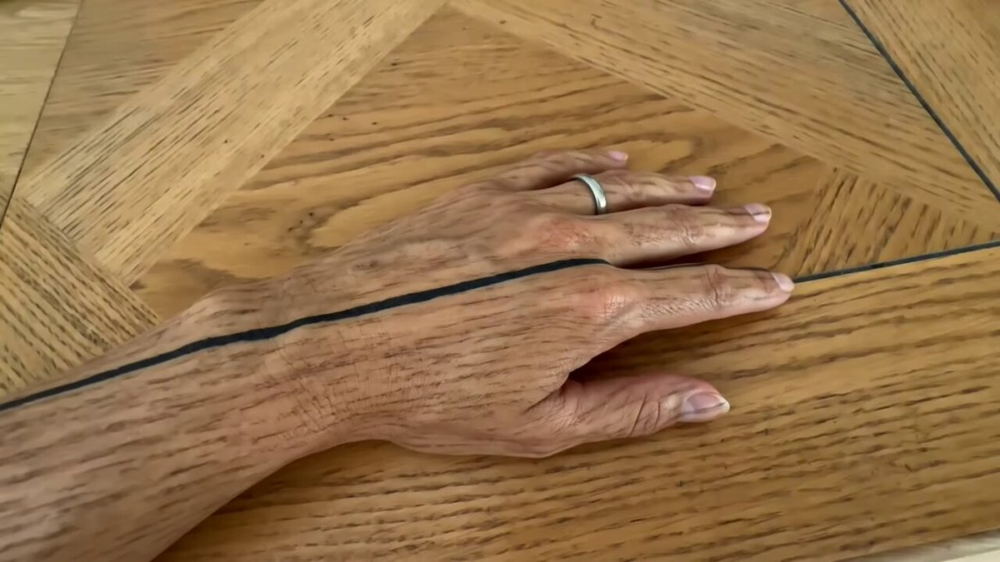
米NY州などW杯の高額チケットを調査 価格設定にファンから苦情
米NY州などW杯の高額チケットを調査 価格設定にファンから苦情
中国ＥＶ、「テスラ流」ローンの中止が暴いた落とし穴
中国EV、「テスラ流」ローンの中止が暴いた落とし穴
Haruhiko Okumuraさんがリポスト
新: ホワイトハウスではAIについて3つの主要な陣営があり、
@diana_nerozzi
氏によると
- David Sacksは規制をほとんど/全く行いたくない
- Pete Hegseth & Emil MichaelはMythos型のモデルにより多くの障壁を設けたい
- Susie Wiles & Scott Bessentは中間的な立場（USGに自主的な事前確認を与える）
危ういAIの株取引 「合理的」に同じ行動、相場急変リスクにFRB警鐘
危ういAIの株取引 「合理的」に同じ行動、相場急変リスクにFRB警鐘
ドイツ、カナダ産LNGの購入契約 エネルギー調達を多様化
ドイツ、カナダ産LNGの購入契約 エネルギー調達を多様化
エボラ感染疑い、コンゴで1000人超 紛争と同時進行は「最悪」
エボラ感染疑い、コンゴで1000人超 紛争と同時進行は「最悪」
老舗通信機OKI、｢高市銘柄｣に変身中 成長戦略17分野の６つに適合
老舗通信機OKI、｢高市銘柄｣に変身中 成長戦略17分野の6つに適合
Haruhiko Okumuraさんがリポスト
世界最速のPDFパーサーを作成しました
そしてそれは、他のあらゆるオープンソースのモデルフリーPDFパーサー（pymupdf、pypdf、markitdown、pdftotext、opendataloader、pymupdf4llm）よりも正確です。
LiteParse v2のご紹介 -
LlamaIndex
@llama_index
LiteParse v2.0 がリリースされました！驚異的な速さで、どこでも動作します！
Rustでゼロからすべて書き直しました。これにより：
- 最大100倍高速な解析
- Rust、JS/TS、Pythonにネイティブインストール
- カスタムWASMパッケージによりブラウザおよびエッジランタイムで使用可能
```bash
pip
米イラン戦闘終結交渉、なおさや当て ｢ホルムズ海峡の管理継続｣報道
米イラン戦闘終結交渉、なおさや当て ｢ホルムズ海峡の管理継続｣報道
とりしま (Sub I/O)さんがリポスト
凍結されました
今までお世話になりました…
私の良くないところをどうぞご指摘ください。
Torishima / INTPさんがリポスト
私たちは、Claude Code をより反応性が高く、信頼性の高いものにするために、多大な努力を注いできました。
これが、私たちが取り組んできたすべてのことのアップデートです：
「AI企業がイイモンでむしろAIに反対する方が邪悪～」とかすげえ言い草だよな。CODAってアニプレとかキングレコードとか講談社とかサイゲとか集英社とか小学館とかスクエニとかジブリとかまあ要するにみんな加盟してるわけ。みんなの方が邪悪でAI企業の方がイイモンって認識に一切疑問ないんすか？
Totan
@daiamonn
むしろタダで生成AIを提供しているからグーグルとか社会貢献しまくりなんだよな、ローカルで動かそうと思ったら50万100万のPCが必要な生成AIをタダで提供してるんだぜ？タダでな
敵対している邪悪な奴らは浄化されたほうがいい x.com/umiyuki_ai/sta…
Torishima / INTPさんがリポスト
わがままはダメとか教育されるのでほとんどの人は「がまん教」みたいなのの信者になりますね。まあ社会を円滑にするには全員が自分勝手に動くと崩壊するからでしょうけどw
null-sensei
@GOROman
世の中には嫌なのに我慢して辞められ無い人が多いけど、自分には我慢の機能が無いのですぐ辞めます。
欧州電力取引でマイナス価格相次ぐ 猛暑で太陽光発電の供給急増
欧州電力取引でマイナス価格相次ぐ 猛暑で太陽光発電の供給急増
The Roomのファーストは乗ったことあるんですけど、ビジネスは初ですな
来月に新しくなったANAのThe Roomのビジネス乗るけど、結構広いみたいで楽しみ
Torishima / INTPさんがリポスト
信用するってのは、自分の期待と結果の相対誤差がある閾値を超えたって定義かね
null-sensei
@GOROman
Cコンパイラがインターナルエラー吐きまくってたり、gccすらない時代を経験してリスティングファイルのアセンブリ読んで直してた時代を経験してる(要はコンパイラとか信用できなかった)ので結局時間が解決するだけの話だと思ってるw
Torishima / INTPさんがリポスト
Cコンパイラがインターナルエラー吐きまくってたり、gccすらない時代を経験してリスティングファイルのアセンブリ読んで直してた時代を経験してる(要はコンパイラとか信用できなかった)ので結局時間が解決するだけの話だと思ってるw
老人「電車乗り遅れる！ドアに杖突っ込んで無理やり乗ったろ！」→結果ｗｗｗｗｗｗｗ #雑談・その他の話
老人「電車乗り遅れる！ドアに杖突っ込んで無理やり乗ったろ！」→結果ｗｗｗｗｗｗｗ - オレ的ゲーム速報@刃の記事ページ
jin115.com
とりしま (Sub I/O)さんがリポスト
KASSENかぐやちゃん
#超かぐや姫
Torishima / INTPさんがリポスト
自分のフォロワーはアーリーアダプタ層(新しい物好き)なので、レイトマジョリティ向け(いわゆる大衆)のコンテンツは見ないだろうし、そもそもターゲットが合ってなかったw
null-sensei
@GOROman
この度、私のフォロワーもほとんど観てなかったテレ東AIアカデミーを一方的に卒業しました。ありがとうございました。
Torishima / INTPさんがリポスト
人の別れとかもこういう感じやね。
null-sensei
@GOROman
自分の脳内で常に高速に微積分器みたいなのが作動してて未来予測してて、このままこれやってても人生の無駄みたいな判断が起きると一気に辞めてしまう x.com/goroman/status…
日本経済新聞 電子版（日経電子版）さんがリポスト
「SaaSの死」懸念脱せぬセールスフォース、最高益予想も株価3割安
「SaaSの死」懸念脱せぬセールスフォース、最高益予想も株価3割安
メキシコ、USMCA死守へ米と交渉 通貨ペソ安サインが示す警戒感
メキシコ、USMCA死守への第一関門 通貨ペソに下落前のサイン
対位法のときか忘れたけど完全四度(五度だっけ？)は昔は不協和かそれに近い悪魔の響きみたいに言われてたみたいな話(うろ覚え)があって「なるほどHR/HM」って納得はした思い出 あと当時はヒーリング系音楽が流行ってたので個人的には4-5度はChineseな響き、1度8度がJapaneseて感じだった。
Rennie M. a.k.a. 刑罰ニキ
@rennie_m_soft
対位法とかでも、オクターブや5度をあまり使わない(特に連続は避ける)みたいなセオリーあるけど、「硬い響き」で流動性を抑制するように聞こえるからなんだろうな。逆に多用するロックやメタルは、この「硬さ」が力強くてカッコいいという狙いがあると思う x.com/shell_waywise/…
NY原油、一時90ドル割れ ホルムズ海峡の航行正常化に期待
NY原油、一時90ドル割れ ホルムズ海峡の航行正常化に期待
「完全」四度の中にわざわざ(？)半音増やす(augment)ので増四度。②の例で言えばFとBbの綺麗な"距離感"に半音増やすので増四度。逆に減(diminish)は半音抜く/削るイメージ。後で減七とか増二とか出てきたら戸惑うかもだけど、この「わざと崩す」感が分かればそんなに間違わないはず。丸暗記より意味。
ゆたんぽ
@yutanpo_horn
これまじで分からない
暗記なんですかね！？
1枚目はなんとか覚えたけど、2枚目のやつがまじで
なんで増4度なんですか基本だからとかですか！？！？
なんか覚え方とかありませんかーー
文面うるさくてすみません
とりしま (Sub I/O)さんがリポスト
JR天王寺駅にもずっと南海の持ち分スペースがあって、そこだけ南海そばと551が入ってるのと同じですね
S
@BLTplz
バリバリにJR東日本の駅である新橋に、なぜかNewDaysではなくて首都圏絶滅種のKIOSKがポツンと。ずっと不思議だったんだけど、ふと気づいた。これってもしかして直上に東海道線新幹線が走っていて、JR東海の持分エリアだからですか？どなたか有識者
政府・自民、成長投資へ「つなぎ国債」 早期に資金調達も償還財源課題
政府・自民、成長投資へ「つなぎ国債」 早期に資金調達も償還財源課題
国家情報局法成立、機密ルート統合 インテリジェンス人材確保は後手
国家情報局法成立、機密ルート統合 インテリジェンス人材確保は後手
シーパラは最高すぎた 100万回いきたい #アイプラ5周年思い出
日本経済新聞 電子版（日経電子版）さんがリポスト
国産AI開発へ製造業連合 旭化成など30社、ソフトバンク系に出資検討
国産AI開発へ製造業連合 旭化成など30社、ソフトバンク系に出資検討
『Forza Horizon 6』も抜いて2026年ベストゲーム暫定1位！『ショベルナイト』開発元の新作アクションADV『Mina the Hollower』海外レビューで高得点
https://
gamespark.jp/article/2026/0
5/28/167023.html?utm_source=twitter&utm_medium=social&utm_content=tweet
…
麻奈のイヤホン とてもいいです #アイプラ5周年思い出
オービック・中川政七商店… 強い企業が「新卒を採り続ける」理由
オービック・中川政七商店… 強い企業が「新卒を採り続ける」理由
ムスリムいたらFANZAのリンク送ってやればいいんだよ
ちゃんほた
@hotahotasa45082
パレスチナのイスラム説教者が、天国を語る
「天国の処女は、普通の女性のような生理現象が一切ない完璧な存在」
「男性信者は、地上の100人分の性的能力を与えられ、複数の妻や性奴隷と永遠に快楽を楽しめる」
性欲しかない宗教。そして女性は天国でも性処理要員です
乗務員がアルコール飲んで欠航。謝って済む問題ではなくなる可能性すらある。
もし地方空港でスタンバイのCAが確保できなかったら欠航だぞ？
JALの飲酒問題、何度やらかしたら気が済むの？てかパイロット以外にも徹底していなかったと知ってびっくりした。
あああああのそよ！公式が見せるお手本のようなあのそよ！
かざかみ
@tlb_chk
俺やっぱこの2人の絡み好きだわ
老人みたいな生活リズム（早朝起床/早晩就寝）になってる
おはようございます
Torishima / INTPさんがリポスト
お台場ほんとに魅力がどんどん薄れてしまっているな…
ビーナスフォートもない、観覧車もない、船の科学館もない、大江戸温泉物語もない
踊る初期で散々揶揄されてた「空き地」にもどりつつある
のぶりん
@nobunobunobune
お台場にある廃墟駐車場
目の前には大江戸温泉物語があったけど解体されて空き地が広がり世紀末感が漂う
とりしま (Sub I/O)さんがリポスト
いろかぐ
テスラさんがリポスト

「呼び出し」って何の刑なんだろ
tetuwan atom
@TetuwanA
警告
社内ネットワークで仕事中にこっそり何かをしないでください。
監視されています
『ウィッチャー3』新DLC「追憶の調べ」実は早期リークだった。CD PROJEKT REDが自ら漏洩認める
https://
gamespark.jp/article/2026/0
5/28/167022.html?utm_source=twitter&utm_medium=social&utm_content=tweet
…
日本気象庁の台風基準が独自路線いってる感があるので、
・TD/TS/TY/STY区分を用いる。
・現在10分平均の風速は1分平均とする。
くらいは統一してもいいのでは？と思いますけどね。
個人的には風速はノットにして欲しいのだけど、まあ、km/hでも計算しやすい(ノットのおよそ半分)からいいけど。
中共も対イスラムに関してだけは良くやっているよなー
おかげでカシュガルではウイグル人にペットボトル投げつけられた
日本人は漢族に見えるみたい
Dr. Maalouf
@realMaalouf
2017年から2019年にかけて、中国は200万人のムスリム（うち50万人が子供）を収容所に送り込みました。そこで彼らは、イスラム教からの「脱洗脳」を目的として、アルコールを飲まされ、豚肉を食べさせられました。
中国は公式に、イスラム教を精神疾患とみなしています。
デジタル通貨の国際決済、BISが実証実験成功 コスト減など期待
デジタル通貨の国際決済、BISが実証実験成功 コスト減など期待
24卒のニート男性「IT企業に就職決まった！正社員で手取り28万円でフルリモート！人生勝ち組あざす！」 → 数日後、とんでもないことになっていた・・・ #雑談・その他の話
24卒のニート男性「IT企業に就職決まった！正社員で手取り28万円でフルリモート！人生勝ち組あざす！」 → 数日後、とんでもないことになっていた・・・ - オレ的ゲーム速報@刃の記事ページ
jin115.com
なるせひろのりさんがリポスト
ソニー BRAVIA True RGB TV の新モデル 2 機種、BRAVIA 9 II と BRAVIA 7 II、そして新しい BRAVIA Theater Trio サウンドシステムを発表します！新しい RGB 技術 TV は、真の 3 ダイオード RGB 技術を使用した、これまでで最も明るくカラフルな TV をお届けします。
https://
electronics.sony.com/t/televisions

あと、JTWCこそTD06Wと低気圧番号を付記してくれる(気象庁の台風番号とは必ずしも一致しない)けど、NOAAのNational Hurricane Centerなんかは、番号表記は一切しないし、英語圏のメディアも名前でしか呼ばない。数字で呼ぶ風習が一切ない以上、日本の方が「ヘンな呼び方をしてる」扱いですよ。
気になるけどGoには対応してないっぽいか...TypeScriptで試すか
YKK
@ysknsid25
なんかこいつ、めっちゃ芯食ったレビューしてくる(すごい)
https://
github.com/marketplace/cu
bic-ai-code-reviews
…
初作が「非常に好評」な動物園運営シム続編『プラネット ズー 2（Planet Zoo 2）』カウントダウン放送開始―日本時間5月28日午後10時頃に新情報公開
https://
gamespark.jp/article/2026/0
5/28/167021.html?utm_source=twitter&utm_medium=social&utm_content=tweet
…
なるせひろのりさんがリポスト
ソニーの新「True RGB」TVモデル、Bravia 9 IIとBravia 7 IIの初見。今日発売され、最大115インチのサイズで登場しました。4000 nitsの輝度を備え、RGB LEDはより優れた色再現を約束しますが、HDMI 2.1ポートは依然として2つのみです。
FlatpanelsHDの詳細記事を今すぐ読む！
NOTOSNOWというアパレル事業を、高橋くんと一緒にやってる丸*織物の社長さんが先天性そそっかしいレベル99なのですが、
金沢駅金沢港口の車乗り場に靴を片方だけ置いて来てしまったようです。
左側の靴を見かけた方はご連絡頂けると、、、
ちなみにお酒は飲んでないそうです。
@TakahashiSan69
ねぇコレ思いついた人ぜったい原作者より頭おかしいよ！？
朗読劇『沙耶の唄』
@saya_roudoku
本日はTシャツのご紹介になります
原作の「あるシーン」をイメージしたタッパーに入れて販売します。色はもちろん赤、サイズはLサイズのみとなります。
是非着て観劇してください
※監修中のサンプルになります。製品は劇場でご確認ください。
チケットはこちらから
http://
l-tike.com/song-of-saya
中国CCTVもアジア名の中国語版を見出しに使ってる模様。韓国もアジア名で報道されることが多いという記事もあったし、こうなるとアジア名を使わずに連番数字にこだわってるのは、北西太平洋沿岸諸国では日本だけなのでは…
毛丹青
@maodanqing
中国中央電視台(CCTV)のニュースでも大きく取り上げられた日本の21号台風は、なぜか中国語にすると「飛燕」と名付けられてしまった。#21号台風
『ウマ娘』レッドディザイア、デアリングハートの“原案イラスト”が公開！ゲーム内とひと味違う雰囲気は一見の価値あり
https://
gamespark.jp/article/2026/0
5/28/167020.html?utm_source=twitter&utm_medium=social&utm_content=tweet
…
ためしにアジア諸国での台風に関する表記。
フィリピン気象庁PAGASAの文書。TS JANGMIと書かれてる。
https://
pagasa.dost.gov.ph/tropical-cyclo
ne-advisory-iframe
…
香港の台風情報サイトの表記。JANGMIとその中国名が書かれる。
https://
typhoon2000.ph/multi/?name=JA
NGMI
…
中国語繁体字のWikipedia 「熱帶風暴蔷薇（Jangmi）」表記
https://
zh.wikipedia.org/wiki/2026%E5%B
9%B4%E5%A4%AA%E5%B9%B3%E6%B4%8B%E9%A2%B1%E9%A2%A8%E5%AD%A3
…
年ごとの数字連番方式しか使わない日本人からすると「無駄」かもしれないけど、実は数字方式を使ってるのは日本と韓国くらいなもので、台風の影響を受けやすいフィリピンや台湾・香港などはアジア名を使う。フィリピンのように勝手な名前を付けるよりかは遥かにマシとすら言える。
buvery
@buvery2
荒木さん向けの文句ではありません。が、この【台風に覚えにくい名前をつける習慣】は、無駄だから辞めれば良い。元々はアメリカの習慣で、英語では【具体名がないと話しづらい】という言語習慣が原因で、ABC順に名前を付けていて、頭文字がそれに合う【女性名】を使っている。この習慣は、例えば、【 x.com/arakencloud/st…
お金を持ってみて見方が変わったよ
以前は
「負担が大きいのはこの人達のせいだ」
と思ってたけどね
今は
「これで子供たちに美味しいもの食べさせてあげてよ。
毎日お風呂入ろうよ。
せめて２日に１回は綺麗になろうよ」
って
本人気づいてるか知らないけど、臭いすごいよ
生保特有の臭い分かるよ
ヒムコ a.k.a 杠葉雨音
@__Ximco__
生活保護の件が伸びてきたので色々他の人のリプライなり引用なりを見ていたのだけれど、生活保護を叩いている人に明確に属性の傾向があった
まず、福祉職の人。これはしょうがないと思う。
で、問題なのがFIREとか株配当とかで益を得ている人も多かった。自身も働かずにお金を得ているのに何なんだ？
一体“普通のゴルフ”とはなんなのか？奇妙な世界のゴルフゲーム『Normal Golf Game』Steam体験版配信―『Fruit Ninja』で知られるルーク・マスカット氏が開発・出演
https://
gamespark.jp/article/2026/0
5/28/167019.html?utm_source=twitter&utm_medium=social&utm_content=tweet
…
Torishima / INTPさんがリポスト
Antigravity CLI、コマンド体系から設定ファイルまでびっくりするほどClaude Codeに似せてありますね。#embodied_claude をベタ移植して細かいところだけ変えたらほぼ動きました。
https://
github.com/lifemate-ai/em
bodied-agy
…
#embodied_agy
作業内容としてまとめてるところは、若干設計思想の違いを感じさせますね。

『ドラゴンクエスト12』では鳥山明氏のキャラ、すぎやまこういち氏の音楽を使用！お二人の魂がこもった最後のドラクエに
https://
gamespark.jp/article/2026/0
5/28/167018.html?utm_source=twitter&utm_medium=social&utm_content=tweet
…
Masanori Kusunoki / 楠 正憲さんがリポスト
わあすごい、会社名を入力するだけで、過去に入力された同じ会社名の住所を選択できるなんて便利だね！
こういうビジュアルデザイン、センスだよな・・・
ガチ技術書ですごい
かぐやかわよ！
リジスさんがリポスト
この時を……………
どんだけ待っていたか…………(泣)(泣)
罪の無い楽曲達が
事実上葬り去られ
悲しみ、切なさに明け暮れた
アタシ達の日々を…………！！
今こそ返して下さい。。。。
さぁ……………………。
田 中 秀 和 楽 曲
の
全 ８ ３ 曲
田中秀和執行猶予日数カウントbot
@HDKZcountBOT
田中秀和の執行猶予期間が満了となりました
AzooKey 0.1.4 、内部のニューラル変換性能が良くなった？からかノンストレスで使えるようになってて嬉しい
とはいえなんだかんだ標準 IME で頑張ってしまうことが多く、しかしエージェントと会話したり普通に文字打ってるときは全然 AzooKey の方が快適だからこっちの頻度を増やしていきたいところ
かっこいい！！！！
なるせひろのりさんがリポスト
「本物だと思ってた」外国人の男が出した“運転免許証”…警察官が「材質」に違和感を覚えて確認すると「ICチップなしのニセの偽造免許証」と判明_入手経路はインターネット〈北海道富良野市〉(北海道ニュースUHB)
「本物だと思ってた」外国人の男が出した“運転免許証”…警察官が「材質」に違和感を覚えて確認すると「ICチップなしのニセの偽造免許証」と判明_入手経路はインターネット〈北海道富良野市〉（北海道ニュ...
Torishima / INTPさんがリポスト
デュアル・モード・ビークル（ＤＭＶ）に関する技術評価検討会
https://
mlit.go.jp/tetudo/tetudo_
fr7_000031.html
…
阿佐海岸鉄道へのDMV導入に関する技術評価
https://
mlit.go.jp/tetudo/content
/001430258.pdf
…
開業前の技術評価では、長期耐久性については引き続き検証を行う必要があるとされていました。
水野良樹＠岡山
@yoshiki_mizu
5/28(木)以降の計画運休について（阿佐海岸鉄道）
https://
asatetu.com/archives/2979/
とうとう使える車両が無くなり、DMVは当分の間全便運休となってしまいました
もう3年が経ったのか…
Torishima / INTP
@izutorishima
もう田中秀和作曲の曲全部学習データとして食わせて AI 田中秀和に新曲作ってもらうしかないな………
輿水畏子さんがリポスト
バンド！
とりしま (Sub I/O)さんがリポスト
ここよりもずっと大規模な施設があります。
ラーメンストリートが有名な東京駅一番街です。
ここも東海道新幹線ホーム下のエリアだけで構成されています。
(エリアを外れると八重洲地下街)
その他にも有楽町駅の新幹線ガード下だけTOICAエリアになっています。
Torishima / INTPさんがリポスト
追加です！スゴい数の追加予約です！
こういう運営関係は基本的に製作Pの長坂を筆頭としたツインエンジンの人達がめっちゃ頑張ってくれている結果だったりします。自分は頑張れーって言いながらポテチ食べてるだけっす。何もできねぇっす！ウスｯ！
『超かぐや姫！』公式
@Cho_KaguyaHime
【Blu-ray特装限定版 追加予約のお知らせ】
『超かぐや姫！』Blu-ray特装限定版につきまして、
多くのお客様にご予約をいただき誠にありがとうございました。
各販売店にて在庫切れの状態となってしまいましたこと、誠に申し訳ございません。
長らくお待たせいたしましたが、
おちフル終わるのか・・・
やっぱオタギャルは「夢」の形をしていない。オタクってこういうのが好きなんでしょという舐めを感じる。
エマくんドール可愛すぎる……
日本経済新聞 電子版（日経電子版）さんがリポスト
スクエニが「ドラクエ」新作情報公開 ロゴを一新、発売時期は未定
スクエニが「ドラクエ12」最新情報を公開 ロゴ一新、発売時期は未定
MICHEE-N（ミッチー・Ｎ）さんがリポスト
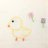
沖縄の路線バスは複数営業所での共同管轄路線が多いことが特徴ですが、便ごとの運行担当営業所がわかる時刻表がない…
ということで作ってみることにしました！
第1弾は東陽バスの泡瀬東線です
今後不定期でいろいろな路線のものを制作する予定です！
#沖縄県路線バスの担当営業所がわかる時刻表
Wordle 1,804 4/6
＞ω＜さんがリポスト
砂浜に打ち上がる深海魚の話 (1/9)
【悲報】クマ出没報告サイト、もうメチャクチャ・・・ #雑談・その他の話
【悲報】クマ出没報告サイト、もうメチャクチャ・・・ - オレ的ゲーム速報@刃の記事ページ
jin115.com
houzakikai@さんがリポスト
◤ ◥
おちこぼれフルーツタルト
完結まであと３話
◣ ◢
今回は特別編につきCarat:Another Facet全面を大公開！
10年超の連載がついに完結へ━━━。
おちこぼれアイドルたちのラストスパートをお楽しみに！
※※※※※※※※※※※※
Torishima / INTPさんがリポスト
反響がありましてありがとうございます
プロンプト公開しますね
「赤い矢印の通りにカメラは一人称で超ハイスピードで突き進んだ映像を生成」
「The camera generates first-person footage that advances at super high speed as per the red arrow」
Gemini - カメラ映像生成の開始
Torishima / INTPさんがリポスト
振り返ってみると、去年12月にGPT-5.2がリリースされて以来の進歩を思うと、かなりクレイジーだ。
今では本番環境での使用率が<1%しかなく、かなり時代遅れだと見なされている！
『デモンキルデモン ～黄泉1984～』本日5月28日発売。架空日本の異世界迷宮「黄泉」を舞台に脱出を目指す3DダンジョンRPG
https://
gamespark.jp/article/2026/0
5/28/167017.html?utm_source=twitter&utm_medium=social&utm_content=tweet
…
ねくまさんがリポスト

田中秀和の執行猶予期間が満了となりました
Torishima / INTPさんがリポスト
Codexの計算フリート管理を簡素化するため、6月2日にChatGPTアカウントでログインした際に、Codex上でGPT-5.2およびGPT-5.3-Codexを廃止します。
無料プランでは、GPT-5.5が今後構築および作業に使用するデフォルトの最先端モデルとなります。
これらのモデルはAPI上では引き続き利用可能です。
NYダウ反発で始まる、一時300ドル高 ホルムズ海峡の開放期待
NYダウ反発で始まる、一時300ドル高 ホルムズ海峡の開放期待
なるせひろのりさんがリポスト
全日本教職員組合の声明が余りにも偏っていて腹が立つので添削した。
全教(全日本教職員組合)
@ZenkyoOfficial
【声明】「同志社国際高校の死亡事故を受けた文部科学省の見解について」
全教は5月27日、中央執行委員会声明を発表しました。
https://
zenkyo.jp/opinion/12612/
Torishima / INTPさんがリポスト
並行して路線バスが走ってるから何の不便も無いし（そもそも唯一無二の交通機関というわけではないからこその搦め手でこうなったわけだし）、このまま廃止になりそう…
水野良樹＠岡山
@yoshiki_mizu
5/28(木)以降の計画運休について（阿佐海岸鉄道）
https://
asatetu.com/archives/2979/
とうとう使える車両が無くなり、DMVは当分の間全便運休となってしまいました
Torishima / INTPさんがリポスト
結局、DMVは毎日営業運行するには強度設計が不十分だった、ということなのかなぁ。しかし1鉄道事業者の全車両が使用不能になって全便運休という事例は過去にあるのだろうか。井の頭線永福町車庫が空襲で焼けたときも、残った車両はあったと思うのだが。
水野良樹＠岡山
@yoshiki_mizu
5/28(木)以降の計画運休について（阿佐海岸鉄道）
https://
asatetu.com/archives/2979/
とうとう使える車両が無くなり、DMVは当分の間全便運休となってしまいました
なるせひろのりさんがリポスト
ドラクエ12の主人公
トカゲの亜人？と同じ剣を持っていますね！
さらに髪型の分け目まで同じ
これは『現実世界の姿』と『夢の中の姿』なのでは？？
Torishima / INTPさんがリポスト
そうですね。職場の時間は一切使わず、職場の資金を一切使わず、論文も一切書かない、という決断をすれば同じことを多くの人ができると思います。でも、まともな精神の人は数年間誰にも評価されず、良い結果が得られる保証が全く無く、トップカンファレンスで認められるような名誉も無い挑戦に時間を割
なんで公職選挙法違反にならないのだろう？
SUNSUN
@Ox7af39d2c
松井氏の手口が書かれていますが、
スマホ20台を使いGmail多重アカウントで、X・TikTokなど計240アカウントを作成。
AI自作ツールでショート動画をほぼ自動量産し、対立候補をネガティブ情報で埋め、アルゴリズムを操作。
高市氏勝利に大きく貢献したと…。
こんなことしたらまずいよね。 x.com/shukan_bunshun…
16ビット高速2Dアクションプラットフォーム『Aggelos 2』概要トレイラー公開―天使と悪魔の2形態を使い分け生き延びる
https://
gamespark.jp/article/2026/0
5/27/167016.html?utm_source=twitter&utm_medium=social&utm_content=tweet
…
なるせひろのりさんがリポスト
007 First Lightで私が気に入った点の一つは、アンチャーテッド4に似たプロシージャルボディアニメーションの使用です。
キャラクターの手が移動中に近くの物体と自然に相互作用する点で、これはゲームではまだ比較的珍しく、顕著なリアリズムの層を加えています。
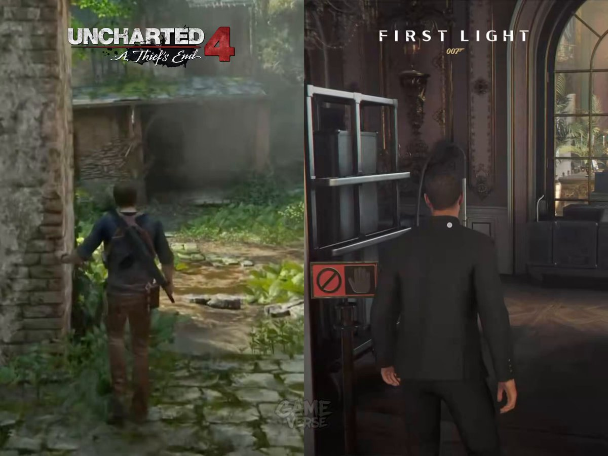
トウカイのクマさんがリポスト
！！！！！！！！！！！！！！！！
（6/29（月）よろしくお願いいたします）
#アイマスch
アイドルマスターチャンネル／アイマスch
@imas_ch
─ ─ ─ ─ ─ ─ ─
#アイマスch メンバー限定配信
6月ゲスト決定&お便り募集中！
─ ─ ─ ─ ─ ─ ─
出演
MC #天音ゆかり
ゲスト #峯田茉優
お便り募集中
https://
forms.gle/FG23YTfHe6NW9t
EP6
…
投稿は❝誰でも❞可能です！
▼メンバー加入はこちら
https://
youtube.com/@imas-official
/join
…
しょうさんがリポスト
流石に上限20万枚は2時間くらいは持つんじゃないですかね…
ø.müller
@ooomuller
え、あの、気づいたんですけど明日の18時はその、超かぐや姫観てるんですけど……超かぐや姫観てて超かぐや姫買えないみたいな可能性だいじょぶ？？？
今期学祭しすぎていて、ごちゃごちゃになってる
オタギャル
とりしま (Sub I/O)さんがリポスト
をっ！
いい所に気が付きましたね＾＾
仰せの通りでございますよ
似たようなものでは、京浜東北線王子駅高架下の立ち食いそば屋「立食そば処 きそば」はJR貨物が経営母体ですね＝店舗上部の高架は廃止された北王子支線の廃線跡ですが、現在もJR貨物の所有物。
S
@BLTplz
バリバリにJR東日本の駅である新橋に、なぜかNewDaysではなくて首都圏絶滅種のKIOSKがポツンと。ずっと不思議だったんだけど、ふと気づいた。これってもしかして直上に東海道線新幹線が走っていて、JR東海の持分エリアだからですか？どなたか有識者
徳丸 浩さんがリポスト
「JWT を localStorage に置くな」はなぜ言われるのか、Cookie 回帰までの時系列整理｜khale
https://
zenn.dev/khale/articles
/web-session-jwt-cookie-history
… #zenn
「JWT を localStorage に置くな」はなぜ言われるのか、Cookie 回帰までの時系列整理
Haruhiko Okumuraさんがリポスト
いつも洞察に富んでいます、
@DrHelenOuyang
ギフトリンク
https://
nytimes.com/2026/05/24/opi
nion/doctor-ai-chatgpt.html?unlocked_article_code=1.llA.mgRz.ILNAe-rKfnPX&smid=url-share
…
渡辺浩弐さんがリポスト
2005年に東京藝術大学に映像研究科が新設されて、北野武特別教授が「鳴り物入り」で着任したとき、「これで映画は死んだ」「大衆娯楽を舐めるな」「国家権力のテコ入れで、いい映画が生まれるはずはない」という議論がありました。ゲームが新たに加わったこのタイミングで思い出しておきたい議論です。
noteが自動翻訳の提供開始 まず英語、海外読者を獲得
noteが自動翻訳の提供開始 まず英語、海外読者を獲得
なるせひろのりさんがリポスト
何でテスラ/NACSはケーブル短く、軽く、細いか。NACSを選んでるのではないと思う。「テスラがやってるから大丈夫なんだろう」実はチャデモもCCSも、過剰なほどに安全主義。電気を流す導体部分の温度に上限を設けてる。しかし、フライパンで料理してる時、フライパンの柄の金属部分が熱くなるのは危険な
Sakura Yae/八重 さくら
@yaesakura2019
【朗報】マツダに続き、Volvoが29年より日本・韓国でNACSを採用へ！！！
欧州ではテスラスーパーチャージャーとの統合を完了、自社アプリだけで2万基以上のスーパーチャージャーを利用可能になったとして、日本でも同等の利便性の実現が期待されています
Charging A Volvo EV At A Tesla
Torishima / INTPさんがリポスト
ベースのマイクロバス自体がなかなか気難しい車両の上、魔改造しているDMVは運用どうなんかなと心配していたら、案の定。
水野良樹＠岡山
@yoshiki_mizu
5/28(木)以降の計画運休について（阿佐海岸鉄道）
https://
asatetu.com/archives/2979/
とうとう使える車両が無くなり、DMVは当分の間全便運休となってしまいました
そもそも今日日BDを数十万枚生産する体制自体が整ってないんだろうなあ オフィシャル通販限定なのもしゃーないというか
本当に最後になりそう
Torishima / INTPさんがリポスト
作り手側が数分で作ったものに対して、受け手となる自分が長時間にわたり、注意という貴重な資源を差し出すことを暗黙に要求されている、と感じちゃうのも要因かもしれない。
mizdra
@mizdra
はてなブログに投稿しました
TSKaigi 2026 の発表資料の体感半数以上が AI 生成感ある資料だった - mizdra's blog
https://
mizdra.net/entry/2026/05/
27/161559
…
#はてなブログ
Torishima / INTPさんがリポスト
『超かぐや姫！』、ここから追加20万枚（＋？）おそらく最後のアニメBlu-ray大ヒット作になるのでは。
とりしま (Sub I/O)さんがリポスト
けんかしたらしい
とりしま (Sub I/O)さんがリポスト
そうなんですよ
陸橋のフェンスもこのように分かれております
トヨタ、３年ぶり「本部」新設 製造技術の専門組織
トヨタ、3年ぶり「本部」新設 製造技術の専門組織
オス（去勢）なんてのも出てくるね。肉を美味しくするためにねじって取ると聞いた。
レイ
@rei_fhs77
個体識別番号が付いている牛肉を食べたので検索かけた
なんか辛くなった
この洗濯物、今夜中に乾くかな…梅雨時のピンチに役立つ衣類乾燥機
この洗濯物、今夜中に乾くかな…梅雨時のピンチに役立つ衣類乾燥機 | ギズモード・ジャパン
なるせひろのりさんがリポスト
全教（全日本教職員組合）が声明
これ、文科省の報告書を読んでないでしょ…
※ちなみに全教は共産党系の教職員組合、日教組は立憲民主党系の教職員組合
全教(全日本教職員組合)
@ZenkyoOfficial
【声明】「同志社国際高校の死亡事故を受けた文部科学省の見解について」
全教は5月27日、中央執行委員会声明を発表しました。
https://
zenkyo.jp/opinion/12612/
バカども少しは萎縮して自重しろ
産経ニュースWEST
@SankeiNews_WEST
「極めて恣意的、撤回求める」辺野古事故の文科省調査結果に京都教職員組合が声明 - 産経ニュース
https://
sankei.com/article/202605
27-QSR22GY2IZP2XLWESUUGPNX73Q/
…
「今回の文科省の措置がいっそう学校現場を委縮させ、子どもたちと一緒に考える平和教育・政治教育を後退させることになりかねないと懸念している」とした。
なるせひろのりさんがリポスト
◪有り難うございました◪
TVアニメ『Re:ゼロから始める異世界生活』
◪4th season 第8話(第74話)
「オマエハダレダ」
ご視聴有り難うございました。
引き続き感想は
#リゼロ #rezero でご投稿ください。
まゆりを助けようとすると紅莉栖が助からないみたいな これなんてシュタインズユーフォ、、RP
テスラさんがリポスト
R360天生峠、今年度は通行止め解除される模様！
ただ7月は飛騨側～峠区間のみの開通で、全線通れるようになるのは9月中旬みたい
しろいこな
@shirokona_sugar
R360天生峠、今年度通行止めとはかなりの損壊そうですね
ちなみにR471･472楢峠について土木事務所に問い合わせたら、法面崩落で当分(少なくとも1～2ヶ月以上)通行止め解除はないとのことでした
Torishima / INTPさんがリポスト
『超かぐや姫！』Blu-ray特装限定版、オフィシャルストア通販のみの事実上の分割受注生産、現実的な落としどころとしては望み得る最高の施策では。
＞RT
政令市が道府県から独立、「特別市」再び議論 副首都の要件に浮上
https://
nikkei.com/article/DGXZQO
UA016JY0R00C26A5000000/?n_cid=SNSTW005&n_tw=1779891623
…
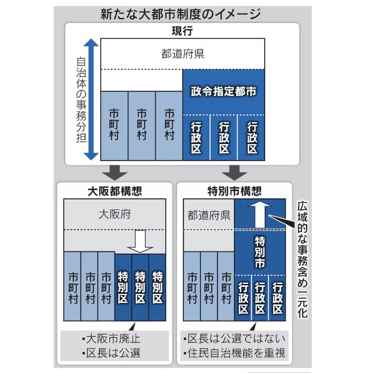
Torishima / INTPさんがリポスト
DMVは全便運休で代行輸送もないため、並行する徳島バス南部の路線バスを利用することになります。
両陛下、国賓フィリピン大統領夫妻招き宮中晩さん会 悠仁さま初出席
両陛下、国賓フィリピン大統領夫妻招き宮中晩さん会 悠仁さま初出席
中国半導体大手の長鑫科技、IPO承認 6900億円規模調達へ
中国半導体大手の長鑫科技、IPO承認 6900億円規模調達へ
マイネームイズさんがリポスト
#prsk_FA
患者の状態を踏まえて薬の代替が可能かどうか考慮することなどを求めています。←？【独自】ADHD治療薬「コンサータ」が供給不足 厚労省が事務連絡を発出 医療機関で過剰な発注控えるよう呼びかけ(FNNプライムオンライン（フジテレビ系）)
#Yahooニュース
【独自】ADHD治療薬「コンサータ」が供給不足 厚労省が事務連絡を発出 医療機関で過剰な発注控えるよう呼びかけ（FNNプライムオンライン（フジテレビ系）） - Yahoo!ニュース
Torishima / INTPさんがリポスト
5/28(木)以降の計画運休について（阿佐海岸鉄道）
https://
asatetu.com/archives/2979/
とうとう使える車両が無くなり、DMVは当分の間全便運休となってしまいました
なるせひろのりさんがリポスト
【悲報】左派四人衆、文科省を怒らせる→辺野古転覆事故の調査結果をHPで公開へ
文科省が同志社国際の平和学習を初の教育基本法違反に認定
↓
左派四人衆「踏み込みすぎだ」と反発
↓
文科省、「じゃあ一つ一つ積み重ねた事実を公開するから読んでみろ」と同志社国際の調査結果をHPで公開へ←ｲﾏｺｺ

産経ニュース
@Sankei_news
文部科学省、同志社国際の調査結果をHPで公開 武石知華さん遺族も公開求める＜全文＞
https://
sankei.com/article/202605
26-U5GQNHTC4NNBTI4RMPDA4JIJQU/
…
複数の政治家から「文科省の判断は踏み込みすぎだ」など反発の声が相次いだことを踏まえて方針転換した。
Torishima / INTPさんがリポスト
「起業しないのか」って聞かれることが多いんだけど、起業ってなにかをやる過程にあるものであって目的ではない気がしてて、必要あるならやりしないならやらないなんだけどそこのところどうなんだろう
【朗報】ドラクエ最新作“ドラゴンクエストXII”、チラ見せ映像が公開される
■ドラゴンクエストXII -夢の彼方へ-
・2021年に発表されたタイトル「選ばれし運命の炎」から「夢の彼方へ」へ変更
・不思議な夢が見える青年が主人公
・鳥山明デザイン＆すぎやまこういち曲を採用

令和の「ビアンカ・フローラ論争」！？ 最新作『ドラゴンクエストモンスターズ4』の主人公抜擢に、早くも沸き立つゲームファン
https://
gamespark.jp/article/2026/0
5/27/167015.html?utm_source=twitter&utm_medium=social&utm_content=tweet
…
副首都「担当相」新設で推進 法案判明、人口・経済を多極分散
副首都「担当相」新設で推進 法案判明、人口・経済を多極分散
DQM4がSteamでも出るあたりPCゲームが一般的になったってのを感じる
絶対という言葉が強すぎるせいで百発百中みたいに語られがちだけど、実際には「絶対的な(←この意味もややこしいw)音感が"どの程度"分かるか」という程度問題だよね。昔「和音は分からない」って言ったら「なんだ絶対音感じゃないじゃん」て言われて、「違うそうじゃない」ってなった
りおえ
@rioe_mh
絶対音感論争起きてるけど、そもそも絶対音感の定義を
・1音だけ鳴ってるドレミ…が分かる
・何音も同時鳴ってるのを聞き分ける
・440Hzと441Hzの違いを聞き分ける
のどのレベルを指しているのか？
1つ目のやつは幼少期音楽やってりゃ誰でもできるでしょと思うけど、2つ目3つ目は訓練必要だと思う。
ボーダーコリーとハスキーの違い
ボーダーコリーとハスキーの違い : ハムスター速報
「ただ一つ、SCP-8900の影響を受けていないポテチのみが真実を伝えていくことだろう。私は残念でならない、諸君。本当に残念だよ。」
http://
scp-jp.wikidot.com/scp-8900-ex
盛り塩
@morisugi_warota
ほんとに色なくなってる！
貝さんさんさんがリポスト
超かぐや姫！Blu-ray特装限定版のブックレットで、監督と原案のフジヤマルリさんと鼎談してますめちゃ貴重な機会で盛り上がった…。個人的に楽しみなのは副音声のキャラコメンタリー！
ご購入予定の方、ぜひお楽しみくださいませ！(ご用意は山のようにあるみたいなので注文焦らず！)
『超かぐや姫！』公式
@Cho_KaguyaHime
【Blu-ray特装限定版 追加予約のお知らせ】
『超かぐや姫！』Blu-ray特装限定版につきまして、
多くのお客様にご予約をいただき誠にありがとうございました。
各販売店にて在庫切れの状態となってしまいましたこと、誠に申し訳ございません。
長らくお待たせいたしましたが、
Haruhiko Okumuraさんがリポスト
重要なニュース。
がん患者さんは藁をもつかむ思いで高額な自由診療に期待してしまう。
このように摘発してほしい。
「がん患者を対象とした自由診療の遺伝子治療を実施したとして、全国の33医療機関に対し、再発防止や治療に用いた製剤の廃棄報告を求める措置命令」
がん遺伝子自由診療に「待った」 未承認の33医療機関に措置命令（共同通信） - Yahoo!ニュース
見た目の印象もチェンジ。サングラスになる眼鏡、めっちゃ快適です
見た目の印象もチェンジ。サングラスになる眼鏡、めっちゃ快適です | ギズモード・ジャパン
とりしま (Sub I/O)さんがリポスト
http://
nani.now の場合はチェック項目が107個あって（ほぼチームプラン関連）、とてもじゃないけど人力でチェックしてられないんだよな…
こういうとこにAIを使って、人間は楽しいお仕事をするのだ
Nani Translate: Fast, Natural-Sounding AI Translation
ホテルの部屋の照明スイッチと卓上のコンセントを連動させるな！
寝てる間に充電できねーだろ！
で、壁のコンセントに変更したら、別の照明と連動してやがる…
風呂場のコンセントが常時通電だわ…
Torishima / INTPさんがリポスト
これガチでマーケ上手いよな、wakooってなんだ？って調べちゃうもん。
前もここ同じようなマーケしてて見事釣られた記憶。担当者誰なんだろ。
tetuwan atom
@TetuwanA
警告
社内ネットワークで仕事中にこっそり何かをしないでください。
監視されています
X民「20年かけて貯めた900万円で株やってみるわ」 → 結果・・・ #雑談・その他の話
X民「20年かけて貯めた900万円で株やってみるわ」 → 結果・・・ - オレ的ゲーム速報@刃の記事ページ
jin115.com
２０万枚キャパを用意するくらいの規模がありそうと見積もってるのとんでもねえことだよな
オマエハダレダ
日本経済新聞 電子版（日経電子版）さんがリポスト
スペースXのIPO、みずほ・楽天・SBI証券で募集 NISA対象
https://
nikkei.com/article/DGXZQO
UB279HP0X20C26A5000000/?n_cid=SNSTW005&n_tw=1779890335
…
23社にのぼる幹事証券には米国みずほ証券が加わっています。
みずほ、楽天、SBIの証券3社は米国みずほ証券からの委託を受けて日本の顧客に販売します。
スペースXのIPO、みずほ・楽天・SBI証券で募集 NISA対象
「サムライジャック」などに影響を受けたガンマンACT『Rose and Locket』Steamでリリース！娘を救うため、1人のアウトローが魂の世界で七つの大罪に立ち向かう
https://
gamespark.jp/article/2026/0
5/27/167014.html?utm_source=twitter&utm_medium=social&utm_content=tweet
…
Torishima / INTPさんがリポスト
課金ありのWebサービス開発のコツなんですが、
あらかじめ「決済関連の動作確認チェックリスト」を作っておいて、
Codexのブラウザ操作で全部チェックしてもらうようにすると超ラクです
Stripeのテストクロックを使えばサンドボックス環境でサブスク更新・解約、カードの期限切れとかも再現できる
確かに本当にこの円盤全部売り切れたら円盤だけで33億円になるのか・・・さすがにないよね？
サブタイトルは「夢の彼方へ」に変更
ドラクエ12、発売は「もうしばらくお待ちいただきたい」 開発体制を変更してリスタート
https://
nlab.itmedia.co.jp/cont/articles/
3858418/
…
期待すぎる
ウマ娘が最大20万なのでこれだけあればいけるやろ・・・ってことなのか？
イーロンに粛清されてしもた・・・
モヒにゃぱん
@nyapan_mohy
寝てる間にナルエビちゃん凍結されるとか、もうギャグやろｗ x.com/oikon48/status…
就活にAI利用は27年卒の85％、18ポイント上昇 マイナビ調べ
就活にAI利用は27年卒の85%、18ポイント上昇 マイナビ調べ
現行犯逮捕や監督辞任が本当に妥当かどうかという問題はあると思うんだけど、喧嘩の仲裁とはいえ父親それもスポーツやってる人が18の娘掴んで投げるのが「家庭内のこと」で済まされるのかというとねぇ…これその辺の草野球おじさんだったらDV親父だ！ってなって誰も問題にしなかったでしょ…？
とりかわ𓅪
@yukky115
阿部慎之助問題、「ChatGPTに頼るなんてねぇ…（長女は未熟ですね）」みたいな空気をマスコミは醸し出してたが、父親があんなで母親がその場にいたにも関わらず、暴力を振るわれた身体で子ども部屋でひとりChatGPTに相談する18歳の女の子を想像すると壮絶でしょ。相談出来る大人は家庭内にいないとか。
リジスさんがリポスト
稚内の更に向こう側にある、真の最果てに行ってきました！
宗谷岬と違ってめちゃくちゃ遠かった
楽画喜堂に5月28日配信開始の電子書籍リストを追記しました。＞
https://
rakugakidou.net/#20260528kindl
es
…
貝さんさんさんがリポスト
アニメ制作に一緒に取り組める仲間を募集しております！
よろしくお願い致します
ROLL2
@ROLL2__
┏・・・・・・・・┓
求人情報
┗・・・・・・・・┛
アニメーションスタジオROLL2では、
中途スタッフ（正社員）を募集中です。
現在制作中の『きみが死ぬまで恋をしたい』『描くなるうえは』をはじめ、今後もさまざまな作品に取り組んでいきます。
詳細はホームページよりご確認ください。
【期間限定】TVアニメ『BLEACH』ED映像｜「Re:pray」Aimer
Aimerを最初に知ったのは本作か『NO.6』だったか。この曲はMVも良く、とても大好き。
最終クールの放送に向け、歴代シリーズを各篇ごとに振り返る特別企画『TV ANIMATION『BLEACH』THE STORIES』が始...
youtube.com
しょうさんがリポスト
キャラコメンタリー、弊社フジヤマがやりたいと言い出し、急遽各方面のプロが集結し実現しました！かなり…いい内容になったと思いますのでぜひ聞いてほしいです！
『超かぐや姫！』公式
@Cho_KaguyaHime
【Blu-ray特装限定版 追加予約のお知らせ】
『超かぐや姫！』Blu-ray特装限定版につきまして、
多くのお客様にご予約をいただき誠にありがとうございました。
各販売店にて在庫切れの状態となってしまいましたこと、誠に申し訳ございません。
長らくお待たせいたしましたが、
とりしま (Sub I/O)さんがリポスト
目元修正版ver.です
ある方がもっと可愛い
とりこぼし
@torikobo_327
彩葉が可愛すぎる
輿水畏子さんがリポスト
うおー
『ウマ娘』新シナリオのテーマは“ラーメン”！？「らっしゃい！トレセン軒！～恩返し、始めました～」が6月下旬に開幕決定
https://
gamespark.jp/article/2026/0
5/27/167013.html?utm_source=twitter&utm_medium=social&utm_content=tweet
…
なるせひろのりさんがリポスト
『ドラクエ12』の映像がついにお披露目！「ドラゴンクエストからのお知らせ」発表まとめ
https://
news.denfaminicogamer.jp/news/2605274h
『ドラゴンクエストXII 夢の彼方へ』
・サブタイトル、開発体制を変更してリスタート
・鳥山明先生のキャラクター、すぎやまこういち先生の音楽
なるせひろのりさんがリポスト
Nintendo Switch 2版『ドラゴンクエストXI 過ぎ去りし時を求めて S』は、パフォーマンス優先モードと画質優先モードの切り替えが可能
・パフォーマンス優先モード（1080p/60fps）
・画質優先モード（1440p/30fps）
ファミ通.com
@famitsu
『ドラゴンクエストXI 過ぎ去りし時を求めて S』Nintendo Switch 2で発売決定
https://
famitsu.com/article/202605
/76172
…
Switch2でドラクエ11Sが楽しめる！ 本日から順次予約開始
すみません、可愛いとか体格差とかそういう完走より先にこれが出てしまいました。
付き合ってるじゃん。
「ドラゴンクエストXII」の最新映像公開。開発は体制を変更してリスタートし，サブタイトルも「夢の彼方へ」に
https://
4gamer.net/s/G057248.2605
27058
…
本作は，ふしぎな夢が見えてしまう主人公の冒険を描くものになり，ダークではなく明るい世界が舞台になるようだ
バトルグラウンド最強ミニオンは、理論上「エンハンスメカーノの毒爆破係」だと思うのだけど、実戦で作れた人いるのかな？ #バトグラ #HSBG
なるせひろのりさんがリポスト
「Mr. KARATE」いったい何者なんだ‥
皆さま是非、ご覧ください
音響監督としてはとくに『パコーーン』
そして『ハアァーン‥』
に拘りました
#CotW #餓狼伝説_MRKARATE参戦
餓狼伝説 City of the Wolves
@GAROU_PR
「Mr.KARATE」配信記念
大張正己氏によるスペシャルロングアニメーショントレーラー公開！
#CotW #餓狼伝説_MRKARATE参戦
輿水畏子さんがリポスト
シリーズ最新作『ドラゴンクエストモンスターズ4 枯れ木の国のビアンカ・フローラ』発表！ ビアンカとフローラが主役か
シリーズ最新作『ドラゴンクエストモンスターズ4 枯れ木の国のビアンカ・フローラ』発表！ ビアンカとフローラが主役か | Game*Spark - 国内・海外ゲーム情報サイト
貝さんさんさんがリポスト
そよちゃん誕生日おめでとう
Torishima / INTPさんがリポスト
アラビックヤマト「本来の使用用途で...」
東京藝大の卒展・修了展で夢中になった
森田直樹さん「のりの気泡を観察する装置」
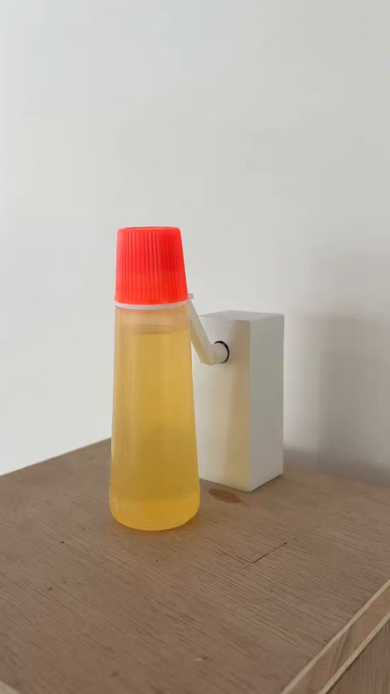
ヤマト株式会社
@yamato_na_150
【お願い】「アラビックヤマト」は本来の用途でご使用ください
現在、SNS上で当社製品を使った動画が話題になっており、たくさんの方に注目していただけて大変嬉しく思っております。
生態系を蘇らせる海洋都市建設シム『Life Below』Steamにてリリース―保護団体の支援に繋がるDLCも
https://
gamespark.jp/article/2026/0
5/27/167011.html?utm_source=twitter&utm_medium=social&utm_content=tweet
…
美術館に行くと老化がゆっくりになるかもしれない
美術館に行くと老化がゆっくりになるかもしれない | ギズモード・ジャパン
「ごちゃつきデスク」の戦い、Ankerのケーブル二刀流電源タップで勝てるよ #BuyPR
「ごちゃつきデスク」の戦い、Ankerのケーブル二刀流電源タップで勝てるよ | ギズモード・ジャパン
『ドラクエXII 夢の彼方へ』ヒロイン？らしき女の子が可愛い！開発中映像が公開
https://
gamespark.jp/article/2026/0
5/27/167010.html?utm_source=twitter&utm_medium=social&utm_content=tweet
…
いるか@心が酒びたっているんださんがリポスト
おめでとう
#長崎そよ誕生祭2026
#長崎そよ生誕祭2026
偽装結婚というより私が美人局や詐欺に騙されてるようにしか見えないかもしれません。
カレキの話なんだ
なるせひろのりさんがリポスト
車検で変な客を追い返すための話
店「車検お見積りは１５万円になります」
客「おい！高すぎるぞ！」
店「車検に必要な部品と交換された方がいい部品が含まれてます」
客「通すだけでいいから」
店「え？これは交換しないと車検通りませんよ？」
客「それ嘘ですよね？（怒）」
店「はい？」
Torishima / INTPさんがリポスト
コスト諸々引いて委員会に20％入ると仮定して20万枚で6～7億、30％仮定なら10億円以上。そこからさらに伸びるだろうから、興収分配分+各種グッズ+企業コラボ等ライセンス料と合わせてツインエンジンへの利益は大きそう。
ポン☆潤々さんがリポスト
メンバー表交換の時にメンバー表もらうところにそっときて
「メンバー表はわたくしめがもらいます」ってはんぺんが交渉して、マモさんからメンバー表もらって「いえー！」って毛玉とはんぺんがよろこんでんのマジで可愛すぎる
「ドラゴンクエストモンスターズ4 枯れ木の国のビアンカ・フローラ」発表。主人公は子ども時代のビアンカとフローラ？
https://
4gamer.net/s/G101055.2605
27061
…
Haruhiko Okumuraさんがリポスト
Codexを使って今、会議をリアルタイムで文字起こしできるようになりました！さらに、会議の最中にCodexに会議について質問することもできます！
新しいCodex Meeting RecorderスキルをGPT Realtime
つなまよさんがリポスト
『ドラゴンクエストモンスターズ 4 枯れ木の国のビアンカ・フローラ』発表！幼い姿のビアンカとフローラがお披露目
https://
news.denfaminicogamer.jp/news/2605274g
映像にはクチバシのある犬のような謎のモンスターの姿も。Switch、Switch 2、PS5、Xbox Series X|S、Steam、Windows向けに発売予定
#ドラクエの日 #DQ40th
あ、スターアニス（八角）、（ペパー）ミント、（パ）プリカで香辛料つながりか
#techno / #VoidcraftRecords
Joey_M - Grinding Module
https://
youtube.com/watch?v=_J4iQZ
rh65Y&list=PL_F42GZ969hiF-tWFt6DFT0O0l_-BEym-&index=4
…
Label: Voidcraft Records
Artist: Joey_M
Title: Rust In The Veins EP
Track: Grinding Module
Catalogue Number: VCR001
Release Date: May 29, 2026
『ドラクエ12』開発体制を変更しリスタートへ！タイトルは『ドラゴンクエス12 夢の彼方へ』に変更、雰囲気もダークから明るいものに
https://
gamespark.jp/article/2026/0
5/27/167009.html?utm_source=twitter&utm_medium=social&utm_content=tweet
…
#dnb / #Overview
Wingz & Verbz - Fresh Air
https://
youtube.com/watch?v=JfgV2I
SJpak&list=PL_F42GZ969hiF-tWFt6DFT0O0l_-BEym-&index=5
…
"Wingz & Verbz team up to bring 'Fresh Air' on Overview Music."
#dnb / #Viper
10xx - The Unknown
https://
youtube.com/watch?v=Xp8poP
VcmLc&list=PL_F42GZ969hiF-tWFt6DFT0O0l_-BEym-&index=3
…
"We’re proud to return with the latest instalment of our 'Future Fire' series"
Torishima / INTPさんがリポスト
寝てる間にナルエビちゃん凍結されるとか、もうギャグやろｗ
Oikon
@oikon48
ナルエビちゃん凍結されてますか...？
https://
x.com/NullEvi03
Torishima / INTPさんがリポスト
超かぐや姫！特装版BD、予約再開の用意できる分で20万枚見込んでるということなのかな？通常版諸々併せてさらに伸びそう。オリジナル作品で今の時代にパッケージでこれだけ賑わせるのもすごい。
#dnb / #VoltageArtistsMusic
Bitsune & M’Go, Basskillah – Burn Fayah
https://
youtube.com/watch?v=lNM1Bc
N5QMc&list=PL_F42GZ969hiF-tWFt6DFT0O0l_-BEym-&index=2
…
Voltage Artists Music
➔Released: 29/05/2026
➔Cat: VAM003
かわいい！鳥さんもいます
10分しかないし大した内容無さそうとは思ったけどマジでこれしかないとは思わんやん
12発売日くらいは出ると思ってたよ
#dnb / #UKF
Malaa (Alter Ego) x ÆON:MODE - Gave Birth
https://
youtube.com/watch?v=zqw72l
PFz_c&list=PL_F42GZ969hiF-tWFt6DFT0O0l_-BEym-
…
"Welcoming mysterious french producer Malaa to UKF with his Alter Ego collaboration with ÆON:MODE."
ベトナム株が最高値圏、MSCI格上げ期待でマネー流入 不動産も支え
ベトナム株が最高値圏、MSCI格上げ期待でマネー流入 不動産も支え
【速報】『ドラゴンクエストモンスターズ4 枯れ木の国のビアンカ・フローラ』発売決定！幼少期のビアンカとフローラが主人公に！ #ゲーム業界
【速報】『ドラゴンクエストモンスターズ4 枯れ木の国のビアンカ・フローラ』発売決定！幼少期のビアンカとフローラが主人公に！ - オレ的ゲーム速報@刃の記事ページ
jin115.com
プロフィールカード何個か保存枠あると嬉しいんだけどなぁ
今の保持したまま新しいの作りたい
なるせひろのりさんがリポスト
007 First Lightには、サイドから見ると一部のモニターの視野角が悪くなるという、クールな小さなディテールがあります。

【速報】『ドラゴンクエスト12 夢の彼方へ』開発一新でサブタイ変更！ゲーム映像公開！主人公など #ゲーム業界
【速報】『ドラゴンクエスト12 夢の彼方へ』開発一新でサブタイ変更！ゲーム映像公開！主人公など - オレ的ゲーム速報@刃の記事ページ
jin115.com
なるせひろのりさんがリポスト
大張先生のユリサカザキ（47）※美魔女 の突然の新規描きおろし絵にユリサカ仮面は死んだ
生放送終了が間に合い、ドラクエ12発表と新モンスターズ発表の放送を見れました！
今井翔太 / Shota Imai@えるエル
@ImAI_Eruel
このあと、BS11 報道ライブインサイドOUTに出演し、Mythos関連のことを話します。
モンスターズもう何も信用してないから別にいいよ
えぇ〜
モンスターズ3やらかしで終わったやん何だったのあれ
春日影を忘れないで←
3曲とも、あのテンポでオルタネイトピッキングあれだけやってるの愛音ちゃんマジ凄い子
ゆいこ
@EQJFqXbmjY44753
千早愛音、ギター始めて3ヶ月程度で迷星叫や迷路日々のバッキングが弾ける時点で才能の塊過ぎる
MyGO!!!!!のバッキングはストローク、アルペジオ、ブリッジミュートなどあらゆる点で普通に難しい
そこら辺アニメだからで済まされるが
なるせひろのりさんがリポスト
【台風情報】
5月27日(水)21時現在、台風6号(チャンミー)はフィリピンの東を北上中。今後は発達して暴風域を伴い、6月はじめに強い勢力で沖縄や奄美に接近するおそれがあります。
その後は進路を東寄りに変える可能性もあるため、本州方面も今後の台風情報に注意が必要です。
https://
weathernews.jp/news/202605/27
0241/
…
タラワで朽ち果てる20cm砲や14cm砲台付近には五角形状の形をした謎のコンクリート残骸が落ちている。
砲台のどこかの足場などではないかと思うが詳細が全くわからない。海面上昇や地盤沈下で波にさらわれてなくなってしまうのが危惧される……
解散
なるせひろのりさんがリポスト
『ドラクエ12』は開発体制を変更してリスタート。現在も開発は継続中
https://
news.denfaminicogamer.jp/news/2605274h
#ドラクエの日 #DQ40th
えぇ…
Game*Sparkさんがリポスト
『No Man’s Sky』10周年目前の大型アプデ「The Swarm」配信へ！史上最大規模の宇宙戦闘、超高火力レーザー搭載の巨大兵器に立ち向かえ
https://
gamespark.jp/article/2026/0
5/27/167008.html?utm_source=twitter&utm_medium=social&utm_content=tweet
…

12きたか
痛いのは嫌なのでアルコールに極振りしたいと思います (@ ニューシンマチ in 京都市, 京都府)
https://
app.foursquare.com/share/checkin/
6a16eb7c52f7f35c3bf8a528?s=OXDgzR1kBnDv5jSEmw-v4cMRuM8&lang=en
…
台風6号/Tropical Depression 06W JANGMI、数値予報は相変わらず初期替わりも大きく、日本の南を東進する点は大まかに一致しているものの、メンバー間の差異も大きいので、本土への影響はまだわからない感じですかねぇ。発生したばかりの擾乱ですし。
https://
tropicaltidbits.com/storminfo/#06W
フロッピーディスク1枚分「1.44mb以下」のゲーム開発コンテスト始動 我こそはという開発者、集え！！ #ゲーム業界
フロッピーディスク1枚分「1.44mb以下」のゲーム開発コンテスト始動 我こそはという開発者、集え！！ - オレ的ゲーム速報@刃の記事ページ
jin115.com
なるせひろのりさんがリポスト
【は？】れ「同志社国際の教育基本法違反認定は撤回すべき」
→ 松本文科相「撤回しません」
→ れ「この問題の根本は、高市自民が国民を無視して戦争準備を推し進めてる事なんですよ！」
【は？】れ「同志社国際の教育基本法違反認定は撤回すべき」→ 松本文科相「撤回しません」→ れ「この問題の根本は、高市自民が国民を無視して戦争準備を推し進めてる事なんですよ！」
いらっしゃいませ！
Torishima / INTPさんがリポスト
正確な販売数は分かりませんが、某サイトによればアニメ作品でウマ娘が累計19万枚なのでもしかしたら日本史上1位をもぎ取ることができるレベルの枚数いけるのでは！？！？
悠仁さま、宮中晩さん会にデビュー 国賓迎え最上級のおもてなし
悠仁さま、宮中晩さん会にデビュー 国賓迎え最上級のおもてなし
【民泊規制の抜け穴に】
マンション一室をホテル登録、東京都心で急増
https://
nikkei.com/article/DGXZQO
CC2158F0R20C26A4000000/?n_cid=SNSTW005&n_tw=1779852989
…
民泊は拡大と同時に、地域でのトラブルも増えています。
ただ、旅館・ホテルとして運用すると「旅館業法」上で営業する形態となり、営業日数といった民泊新法上の規制が及ばなくなります。
マンション一室をホテル登録、東京都心で急増 民泊規制「抜け穴」に
『ドラゴンクエストXI 過ぎ去りし時を求めて S』スイッチ2版9月24日発売！画質とパフォーマンスを優先する2つのモード搭載
https://
gamespark.jp/article/2026/0
5/27/167007.html?utm_source=twitter&utm_medium=social&utm_content=tweet
…
なるせひろのりさんがリポスト
「Mr.KARATE」配信記念
大張正己氏によるスペシャルロングアニメーショントレーラー公開！
#CotW #餓狼伝説_MRKARATE参戦
Torishima / INTPさんがリポスト
合 計 2 0 万 枚 増 産！ ？
歴代アニメ円盤売上枚数調べてみたけどこのレジェンド群超える可能性あるってこと？
ウマ娘 プリティーダービー season2
192,975枚
新世紀エヴァンゲリオン
131,166枚
ラブライブ!
116,892枚
鬼滅とか入れるとまた別だと思うけどエグい
#超かぐや姫
『超かぐや姫！』公式
@Cho_KaguyaHime
【Blu-ray特装限定版 追加予約のお知らせ】
『超かぐや姫！』Blu-ray特装限定版につきまして、
多くのお客様にご予約をいただき誠にありがとうございました。
各販売店にて在庫切れの状態となってしまいましたこと、誠に申し訳ございません。
長らくお待たせいたしましたが、
Torishima / INTPさんがリポスト
22時前でこんな感じです。
やなぎさん
@photo_chem
もし湘南に足を運ぶなら、青い波を探すんじゃなくて、異常な人混みを探すと良いです。
Tropical Depression 06W発生。気象庁は早々に台風6号(TS相当)に格上げしたけど、JTWCは25KTS級で一旦TD止まり(TS格上げには34KTS以上必要)。UW-CIMSSのADT解析でもCI値2.0(30KTS相当)なので、やや気象庁の先走り感が。
https://
metoc.navy.mil/jtwc/products/
wp0626.gif
…
https://
tropic.ssec.wisc.edu/real-time/adt/
odt06W.html
…
とりしま (Sub I/O)さんがリポスト
だから「いただきます」や「ごちそうさまでした」を言うんやで
レイ
@rei_fhs77
個体識別番号が付いている牛肉を食べたので検索かけた
なんか辛くなった
長寿でがんにもなりにくいネズミの遺伝子を研究したら、ヒアルロン酸に秘密があることが分かってきた
長寿でがんにもなりにくいネズミの遺伝子を研究したら、ヒアルロン酸に秘密があることが分かってきた | ギズモード・ジャパン
ドラゴンクエストからのお知らせ
https://
youtu.be/nRKyyK7S-Zw?si
=kOr3Pw7uMpOcpT3i
…
@YouTube
より
『ドラゴンクエストXII』は、新しい体制でリスタートを行い、タイトル名を『ドラゴンクエストXII 選ばれし運命の炎』から『ドラゴンクエストXII 夢の彼方へ』と改め、ロゴと共に一新いたしました。ゲームデザイナー・堀井雄二氏とエグゼクティブプロデューサー・齊藤陽介から、本発表に関するメッセージを、開発中のゲーム映像...
youtube.com
なるせひろのりさんがリポスト
錦糸町のテスラストアはなんかやっぱイメージ良くないな、……
上の人が許可出したとしても、モデルYって50kg以上はのせちゃダメじゃなかったっけ？
時々海岸でも見られる夜光虫。綺麗ですねー。
47NEWS
@47news_official
鎌倉・材木座に夜光虫 青白く発光、一帯が幻想的な雰囲気に
https://
47news.jp/14370109.html
アニメ系買取店がまた増える…
✧━━━━━━━━━━━━✧
#初星学園放送部
✧━━━━━━━━━━━━✧
ご視聴ありがとうございました！
来週も21時からお届けします！
アーカイブはこちら
https://
asobichannel.asobistore.jp/watch/rmhpyhf97
次回もお見逃しなく！
#学マス
【埼玉】調子に乗ったイスラム教徒「日本人の法律なんてどうでもええわ」川越に巨大モスクを無申請・無許可で違法建築←日本がガチで舐められまくってる件
【埼玉】調子に乗ったイスラム教徒「日本人の法律なんてどうでもええわ」川越に巨大モスクを無申請・無許可で違法建築←日本がガチで舐められまくってる件 : ハムスター速報
64時代への情熱注ぎ込んだ王道3Dプラットフォーマー『Spherebuddie 64』発売。ちっちゃなボディで超ジャンプ！
https://
gamespark.jp/article/2026/0
5/27/167006.html?utm_source=twitter&utm_medium=social&utm_content=tweet
…
✧━━━━━━━━━━━━✧
#初星学園放送部
ゲスト情報！
✧━━━━━━━━━━━━✧
6/3(水)放送回
川村玲奈 さん (篠澤広役)
伊藤舞音 さん (倉本千奈役)
投稿フォーム
https://
asobistore.jp/content/title/
Idolmaster/gakuenradio/contact/
…
募集は金曜午前まで！おたよりお待ちしています！
#学マス
「ドラゴンクエストXI 過ぎ去りし時を求めて S」のSwitch2版が9月24日に発売決定。オンラインストアの予約受付もスタート
https://
4gamer.net/s/G101054.2605
27060
…
パッケージ版には限定の特別スリーブが付属
しょうさんがリポスト
え、あの、気づいたんですけど明日の18時はその、超かぐや姫観てるんですけど……超かぐや姫観てて超かぐや姫買えないみたいな可能性だいじょぶ？？？
ロボのエンジェルしてみたかった人生
reading... ヒト型AIロボスタートアップのアトムが30億円調達 「日本のGDPを1％アップ」目指す - ITmedia NEWS
ヒト型AIロボスタートアップのアトムが30億円調達 「日本のGDPを1％アップ」目指す
輿水畏子さんがリポスト
コラボ3組目
Anker、燃えにくいモバイル充電器 難燃素材で発火リスク低減
Anker、燃えにくいモバイル充電器 難燃素材で発火リスク低減
神聖魔法で、腐敗を清める…ってのは、神聖魔法で微生物を全滅させるってことなん？
あー、こっちもたまらんですね。
【栗の声で聴いてみて！】不思議色ハピネス / 小幡洋子 cover by 栗林みな実 〈魔法のスター マジカルエミ〉
https://
youtu.be/iuJLUoJQ_Uk?si
=90eZj7e0FOJwMnJM
…
@YouTube
より
TVアニメ『魔法のスター マジカルエミ』OPテーマ不思議色ハピネス / 小幡洋子 （1985年リリース）作詞：竜真知子作曲・編...
youtube.com
わあ、ありがとう。観に来て、観に来て！
舛本和也
@kenji2413
CAMPFIREで「私たちは、これからも作り続ける。－
http://
P.A.WORKS創業の地で映画祭を実現したい」の支援者になりました！
https://
camp-fire.jp/projects/93473
0/view?utm_source=twitter&utm_medium=social&utm_campaign=tw_sp_share_c_msg_backers_show
… #クラウドファンディングCAMPFIRE @parubooksより
Torishima / INTPさんがリポスト
ナルエビちゃん凍結されてますか...？
https://
x.com/NullEvi03
null-sensei
@GOROman
問い合わせが多いのでナルエビちゃん三世と同じスクリプトをオープンソース化しました。
https://
github.com/GOROman/nullev
i03
…
／
6月3日 月村手毬の誕生日に向けて
「誕生日お祝いメッセージ」募集中
＼
▼送付先はこちら
https://
forms.office.com/r/LCVfcJkAMK
募集は明後日5/29(金)まで！(予定)
誕生日当日をお楽しみに♪
#学マス
エンドスさんがリポスト
攻めてこない敵国の代わりに公安警察が国民の家を襲う、そんな日本は真っ平だ。
本日の韓国でのVISA支払い為替レート。
三井住友カード： 100ウオン＝10.63円
ANA Pay： 100ウオン＝11.05円
やっぱりANA Payは少々為替レートが悪いねぇ・・・。
Torishima / INTPさんがリポスト
再販うおおおおおおって
＞・9/9(水)以降順次お届け分(数量上限10万個)
＞・10月下旬以降順次お届け分(数量上限10万個)
( ´°ω°` )10万×2！！？？？
公式だけで20万+先日の予約分だけ枠があって
更にゲーマーズやらアニメイトやら他にも色々なショップの枠があって…
『超かぐや姫！』公式
@Cho_KaguyaHime
【Blu-ray特装限定版 追加予約のお知らせ】
『超かぐや姫！』Blu-ray特装限定版につきまして、
多くのお客様にご予約をいただき誠にありがとうございました。
各販売店にて在庫切れの状態となってしまいましたこと、誠に申し訳ございません。
長らくお待たせいたしましたが、
「餓狼伝説 City of the Wolves」，新たなプレイアブルキャラクター「Mr. KARATE」が本日参戦
https://
4gamer.net/s/G064915.2605
27059
…
Mr. KARATEのオリジナルストーリーを楽しめる「EOST MODE」「ARCADE MODE」も追加された
一定の年齢以上のアニメファンには刺さるに違いないこれ。
ぐはっ！
【栗の声で聴いてみて！】背中ごしにセンチメンタル / 宮里久美 cover by 栗林みな実 〈メガゾーン23〉
https://
youtu.be/CvNESb0NR9M?si
=yA8ypy2dkswsrqtg
…
@YouTube
より
OVA『メガゾーン23』主題歌背中ごしにセンチメンタル / 宮里久美（1985年リリース）作詞：三浦徳子作曲：芹澤廣明編曲：鷺巣詩郎Vo：栗林みな実・Track & Programming：今ヰ佑樹・Electric Guitar：今ヰ佑樹NowMusic https://www.nowmusic.jp/Mix...
youtube.com
Haruhiko Okumuraさんがリポスト
デジタル教科書界隈？が数日ホットですが…。
大人が老眼で紙の新聞や本が読みにくくなって、スマホの文字大きくしたり、オーディブル使ったりするのに、子どもには「紙一択」を強いるのなぜなんでしょうね。
Benさんがリポスト
【Blu-ray特装限定版 追加予約のお知らせ】
『超かぐや姫！』Blu-ray特装限定版につきまして、
多くのお客様にご予約をいただき誠にありがとうございました。
各販売店にて在庫切れの状態となってしまいましたこと、誠に申し訳ございません。
長らくお待たせいたしましたが、
プロジェクトセカイ カラフルステージ！ feat. 初音ミク【プロセカ】さんがリポスト
MORE MORE JUMP！ 13th シングル
ジャケットイラストを制作させていただきました。
#プロセカ
Torishima / INTPさんがリポスト
何これ美しすぎる...。ルシフェリンとルシフェラーゼの発光反応メチャクチャすげえ。
#夜行虫
なるせひろのりさんがリポスト
『ドラゴンクエストXI 過ぎ去りし時を求めて S』Nintendo Switch 2で発売決定
https://
famitsu.com/article/202605
/76172
…
Switch2でドラクエ11Sが楽しめる！ 本日から順次予約開始
MICHEE-N（ミッチー・Ｎ）さんがリポスト
先ほど自治会長からの情報です。
昭島市生活コミュニティ課より多摩川くじら公園付近で大型動物のフンが確認されたとのこと。
調べた結果、熊の可能性が高いということです。
近隣の大神町、宮沢町、田中町の皆様ご注意ください
プロジェクトセカイ カラフルステージ！ feat. 初音ミク【プロセカ】さんがリポスト
【お仕事】
ワンダーランズ×ショウタイム 13th シングル
ジャケットイラストを担当させていただきました。
よろしくお願いいたします！
プロジェクトセカイ カラフルステージ！ feat. 初音ミク【プロセカ】さんがリポスト
Leo/need 13thシングル『花結び/このまんまでいこう』
ジャケットイラストを描かせていただきました！よろしくお願いします
#プロセカ
とりしま (Sub I/O)さんがリポスト
超かぐや姫にて、担当パートの二原をご作業いただいた方の取材がNHKで放送されました！
↓こちらから視聴できます！
https://
edu.web.nhk/school/watch/b
angumi/?das_id=D0005171025_00000
…
NHK福祉 ハートネット
@nhk_heart
テーマは「福祉的就労」
就労継続支援B型(B型事業所)に注目！
人気アニメの作画を手掛けていたり、
1鉢5万円するコチョウランを栽培していたり。
ユニークな活動をしているB型事業所を、
てれび戦士が取材。
→
https://
web.nhk/tv/an/hntv/pl/
series-tep-J89PNQQ4QW/ep/LPR4L9XRKN#article
…
5/18(月)夜8時Eテレ
ハートネットTV フクチッチ
とりしま (Sub I/O)さんがリポスト
かぐやに驚く彩葉です。
こちらの一連の原画も担当しました。
ダンボールのところが特に大変でした。
#超かぐや姫
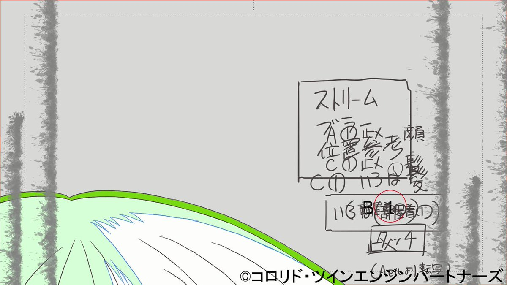
ポン☆潤々さんがリポスト
【動画公開】
／
彩
「縁会！〜ENTERTAINMENTS！」
Dance Practice
＼
#SideMFANFES_WGF でも披露！
彩の宴会場
ご視聴はこちら！
https://
youtu.be/Ax1xOdVYq7Q
#SideM #良いSHOW
なるせひろのりさんがリポスト
ベンがあのマン・スパイダーの噛みつきパワーでやられて、突然能力が目覚めるなんて、ニコラスはこのシーンで完全にキレッキレ、変身シーンは見ていてめっちゃヤバかった。
#SpiderNoir

Torishima / INTPさんがリポスト
昔作った資産切り崩しシミュレーター、案外アクセスがあることを知った。便利なので使ってね！
https://
asset-melt.party
輿水畏子さんがリポスト
おハンナ
Haruhiko Okumuraさんがリポスト
社会人が色々なものを犠牲にして頑張って国際誌に論文を投稿したら、査読コメントが返ってきて、査読者に引用するように指示された複数の論文が全て非実在文献だった……。査読とは……。
なるせひろのりさんがリポスト
ヨドバシカメラでじゃバッテリーが膨らんでても形を保っているならそのまま引き取ってくれますぞ。
他、各自治体で危険物だの小型家電だのの扱いで回収してくれるので、ちょいと調べてみてほしい。
いずれも無料。金取るのは詐欺やで！
みなと
@oogutikaimono
前に「膨張したモバイルバッテリー1点7,700円で回収します！！」って業者もいましたが、7700円なんて出さなくても横浜市は資源循環局収集事務所持っていけば無料で引き取ってくれるから。騙されないようにです。#モバイルバッテリー #横浜市
Torishima / INTPさんがリポスト
自分でガン詰め方が怖くなってて自分が怖い
Torishima / INTP
@izutorishima
自分でガン詰め方が怖くなってて自分が怖い
Torishima / INTPさんがリポスト
グラフを眺めていて、2025年後半ぐらいからの「月刊フロンティアモデル」っていうおかしな状況を思い出してしまい、ここは笑うとこだぞ！と思いながら真顔になっているぽな
うえぞう@うな技研代表
@uezochan
OpenAI、Anthropic、Google、xAIのフロンティアモデルのバージョンを比較してみました。各社ともジリジリとGPTシリーズとの差を縮めてきています。とはいえ、xAIやGoogleは現時点で約3年のビハインドがあります
まーさんがリポスト
真由を幸せにしようと思うと久美子が不幸になるの何
Torishima / INTPさんがリポスト
資料眺めたけどまじで草
もはや来年あたりは謎の中華フォント資料で埋まってそう
mizdra
@mizdra
はてなブログに投稿しました
TSKaigi 2026 の発表資料の体感半数以上が AI 生成感ある資料だった - mizdra's blog
https://
mizdra.net/entry/2026/05/
27/161559
…
#はてなブログ
とりしま (Sub I/O)さんがリポスト
彩葉が可愛すぎる
Torishima / INTPさんがリポスト
【URL「圧縮」サービス始めました】
あなたのURLを圧縮し、Discordなどの文字数制限の厳しいサービスへ、ペースト可能にします。
※URL短縮サービスではありません。
現地集合するのと、現地解散するのと、どっちが偽装結婚っぽく見えるか…
Torishima / INTPさんがリポスト
ところがバージョン伸び率に着目してみると、様相は一転します。GrokとGeminiがリリース以後それぞれ4.2倍、3.5倍と急進しているのに対して、GPTとClaudeは1.6倍程度しか伸びていません
エンドスさんがリポスト
＿人人人人人人人人人人人人＿
＞ 立法目的と立法事実を ＜
＞ 説明できない法案 ＜
￣Y^Y^Y^Y^Y^Y^Y^Y^Y^Y^Y^Y^￣
(･ω･)

保団連（全国保険医団体連合会）
@hodanren
小西議員
「大臣の裁量で診察、検査、処置などを保険除外できる法案の立法事実(必要性)と立法目的は？」
保険局長
「現在、具体的に考えているものはない」
小西議員
「16年間、国会議員やっているが、立法目的と立法事実を説明できない法案に遭遇したのは初めてだ」
5月26日参議院厚労委員会
Torishima / INTPさんがリポスト
OpenAI、Anthropic、Google、xAIのフロンティアモデルのバージョンを比較してみました。各社ともジリジリとGPTシリーズとの差を縮めてきています。とはいえ、xAIやGoogleは現時点で約3年のビハインドがあります
なるせひろのりさんがリポスト
＼Mr.KARATE参戦記念イラスト公開／
SNKイラストレーターの「なゆた」さんによる描きおろし！
欲望に満ちたサウスタウンを舞台に、新たな“伝説”が始まる。
#CotW #餓狼伝説_MRKARATE参戦
いるか@心が酒びたっているんださんがリポスト
大〜〜〜きく見ればだよ？
Haruhiko Okumuraさんがリポスト
最近のデジタル教科書批判、鼻で笑っておけばいいだろう、と思わなくもないのですが、しかし、さすがに黙っていてはいけないのではないか、と思うようになってきて書きました。
デジタル教科書批判への回答｜鈴木秀樹
@soundexplorer
デジタル教科書批判への回答｜鈴木秀樹
いるか@心が酒びたっているんださんがリポスト
Twitter、報告項目にいい加減「デマの拡散」をつけて欲しいんじゃが……。
ふぇむ(せかんど！)さんがリポスト
みつあみタイツプリン
なるせひろのりさんがリポスト
フェラーリ ルーチェ、海外でも馬鹿にされすぎて草
ピコ太郎のPPAPみたいになってるし

とりしま (Sub I/O)さんがリポスト
しょうさんがリポスト
関内ベースゲートの一角にお邪魔しました。日比谷とはまた違ったお店です。ハイボールが美味しかったです。皆様もお近くにお寄りの際は是非お立ち寄りください。
なるせひろのりさんがリポスト
玉城デニー「沖縄の平和教育は文科省によって瀬戸際に立たされてる」
「文科省の言った通りなら、教育に対する不当な介入、現場への不当な介入」
なんでこいつ被害者みたいな発言しているの？
お前は加害者だろ。
そもそも文科省は平和教育は否定していないが？
本当に次の選挙で落ちてほしい。
日本経済新聞 電子版（日経電子版）さんがリポスト
スペースXのIPO、みずほ・楽天・SBI証券で募集 NISA対象
スペースXのIPO、みずほ・楽天・SBI証券で募集 NISA対象
Haruhiko Okumuraさんがリポスト
気になった
@_budyonny
数理科学風のLaTeX作成術｜ぶじょんぬい
数理科学風のLaTeX作成術｜ぶじょんぬい
Torishima / INTPさんがリポスト
急遽江ノ島まで夜光虫撮りに行ったけど月の明かりと夜光虫の青い光が相まって幻想的でした。
またいつか見たいなぁ
Sony a7RII + SEL1635GM
#夜光虫
#江ノ島
軍手さんがリポスト
勿体無くてここ10年位貯めたままです。
なるせひろのりさんがリポスト
ゲームは、こういうシステムを使って、君が誰としてプレイするべきかを強化するんだ。ボンドは洗練されててクリーンな存在として描かれてるよ、彼は歩行者を轢いたりしない。このゲームはそういうことを許すように作られてないんだ、なぜならそれは君が浸るべきフィクションの一部じゃないから。基本的
Michael Does Life
@MichaelDoesLife
007 First Lightの詳細の欠如は、恥ずかしいほどひどい。2026年だというのに、まだ何にも反応しない像のようなNPCが存在するなんて。うわっ！
いるか@心が酒びたっているんださんがリポスト
アツドリがアワーノーツになった事に対しての反応、これが1番笑った
永瀬アンナさんがリポスト
…………
TVアニメ #氷の城壁
予告公開
第9話「自覚」
https://
youtu.be/Zm_YH_1voY8
てってけてってけてってけてってけ
5月28日から毎週木曜よる11時56分～
TBS系28局にて全国同時放送

とりしま (Sub I/O)さんがリポスト
風呂キャン8000年
#超かぐや姫
日本経済新聞 電子版（日経電子版）さんがリポスト
JAL、CAが「過度な飲酒」で出発遅延 パイロットに続く不祥事
JAL、CAが「過度な飲酒」で出発遅延 パイロットに続く不祥事
とりしま (Sub I/O)さんがリポスト
【サンプル2/3】
第2章「犬DOGEを作ろう！」/
@mikuta0407
10年ぶりに立川のタワマンに戻ってきたかぐや。大掃除中に彩葉のワンピースを見つけたことから、みんなに犬DOGEの作り方を教える配信をすることを思いつく。
（おそらく）元ネタとなったPocketStation実機で、犬DOGEを再現します！C言語！
とりしま (Sub I/O)さんがリポスト
【サンプル1/3】
第1章「AIヤチヨチャットを作ろう！」
KG型ボディの開発の結果、資金不足に直面する彩葉。ヤチヨが提案により、彩葉が「ツクヨミプログラミング教室」の先生を務めることに！？
HTML+CSS+JS(Vite)+Hono(TypeScript)+OpenRouterで、AIヤチヨチャットを作り上げます！
とりしま (Sub I/O)さんがリポスト
この本のジャンルは『技術同人誌』というものです。超かぐや姫！を題材に、技術（特にプログラミング）について解説しています。
・rayのMVで幼少期の彩葉が相談していたヤチヨのチャット
・かぐやが携帯ゲームキットで作った犬DOGE
これらを実際に作って、プログラミングを学ぶ本に仕上げました！
とりしま (Sub I/O)さんがリポスト
【お知らせ】
6/7(日) 超かぐや姫！オンリー「ヤオヨロー！」にて、技術同人誌『かぐやと学ぶ 超！プログラミング』を頒布します！
・AIヤチヨチャットを作ってWebアプリを学ぶ
・犬DOGEを現実で再現する
・短編小説（2篇）
B5・124ページ・本文モノクロで1,000円予定です！
サンプル等ツリーへ
貝さんさんさんがリポスト
TVアニメ『少女終末旅行』“水族館”テーマのポップアップショップが開催決定
https://
news.denfaminicogamer.jp/news/2605273t
チトとユーリが水族館に訪れるメインビジュアルと特設サイトが公開。東京・AKIBAカルチャーズZONEにて、6月12日～28日の期間限定で開催へ
とりしま (Sub I/O)さんがリポスト
パンツは必須アイテムだ！
#超かぐや姫
いるか@心が酒びたっているんださんがリポスト
240番
Torishima / INTPさんがリポスト
めちゃ速い船で帰ってます。海の上をちょっと浮いて爆走する船。飛行機扱いらしい。すげえ
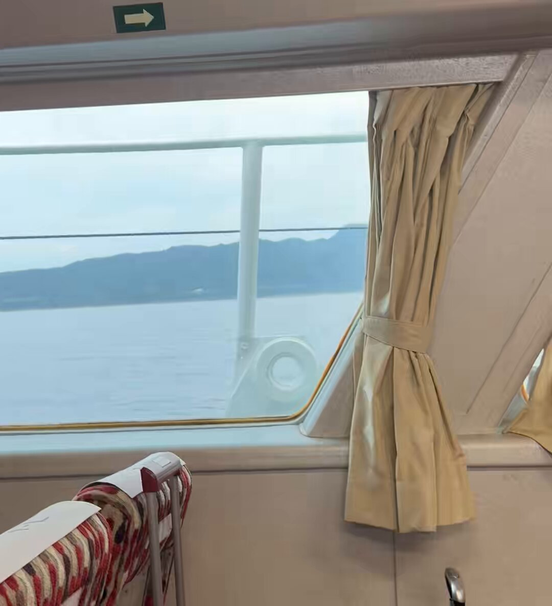
とりしま (Sub I/O)さんがリポスト
AIにも睡眠を与えるべきかもという研究。LLMにFastWeightsという固定長の内部記憶領域を用意して、コンテキストウインドウが埋まるたびにLLMを一旦睡眠状態に移行してコンテキストの記憶を整理・圧縮させるようにしたらタスクのスコアが上がったとかいう話。今まではコンテキスト溢れたら一旦内容を要
DAIR.AI
@dair_ai
// 言語モデルには睡眠が必要だ //
エージェントに「睡眠」を取らせておけ、皆さん。
真面目な話、これは長期的エージェントから最大限を引き出すという魅力的な論文です。
とりしま (Sub I/O)さんがリポスト
ノリノリで踊ったことを悔いる彩葉さん
#超かぐや姫
Torishima / INTPさんがリポスト
自分の脳内で常に高速に微積分器みたいなのが作動してて未来予測してて、このままこれやってても人生の無駄みたいな判断が起きると一気に辞めてしまう
null-sensei
@GOROman
いや、自分の会社やってて全員解雇とか執行役員だけどいきなり辞めるとかやるのであんま関係ない x.com/hama_jp/status…
ちなみに、私は"青の星連合"、妻は"赤い統一世界"で対立する相容れない陣営。コロナ後に新婚旅行相当でイーデン校などにやっと行けた時は、行きも帰りも別々で現地合流。家族だとバレないスパイファミリーでした。
妻は「ビジネス取れなかったからせめて直行にしたわー」と本当に違う世界でした……
かずぴー冬コミ新刊委託中
@kazupi
【ご報告】
告知がかなり遅くなりましたが、入籍していました。
コロナ禍で式などできず、タイミングを逃したままでしたのでこの場で報告いたします。
海外の同人イベントをきっかけに国際結婚となり、今は大変な世界情勢ですが共通の"好き"で国を越えて繋がれる文化と皆様に感謝しかありません。
Torishima / INTPさんがリポスト
GPT-5.5 Thinkingでもなるのか
Blueberry1001
@bluebery1001
ChatGPTってまだ植物百科通で壊せるんだ
Torishima / INTPさんがリポスト
【肥薩線 吉松～隼人間 運行再開のお知らせ】
「2025年8月豪雨」の被災により列車の運行を取りやめていた肥薩線・吉松駅～隼人駅間の、列車運行を再開いたします。沿線の皆さま、ご利用のお客さまに大変ご不便をおかけしておりましたこと、心よりお詫び申し上げます。
運行再開日
Torishima / INTPさんがリポスト
なるせひろのりさんがリポスト
悪でしょうよ
ドアパンとか軽く言うけど器物破損ぞ。
ドアパンで犯人見つからず自腹で修理費50万。
この費用聞いても笑えるか？
アハハ気にするなよ！で済む金額か？
故意だろうが未必だろうが
所有者が許すかどうかは当てた側が勝手に決めていい事じゃない。
責任負わずに逃げたら犯罪。
タツ𝕏
@ritten_JBN
素朴な疑問なんだけど…
ドアパンって、そんなに悪なの？？
乗車年数はともかく、車なんて完全に消耗品なんだし、飛び石やら泥やら車が汚れたりキズを負ったりする要素なんていくらでもあるのに、なんでドアパンだけそこまで敵視するのか分からん。
あるいは、あらゆるキズを降車ごとに修繕するの？
なるせひろのりさんがリポスト
玉城デニー氏を褒め、古謝げんた氏を落とそうとするアカウントが今月生まれた模様。
工作員としか思えない。
活動家か？
貝さんさんさんがリポスト
26卒は業務委託だった会社が27卒では社員雇用に変わっているところを複数社確認しています。
年を追うごとに社員雇用の割合が増えている印象です。
貝さんさんさんがリポスト
新卒アニメーター求人について、元請会社に絞れば7〜8割方は社員雇用ではないかと思います。
2026年現在において余程ネームバリューのある会社でない限り、業務委託で優秀な新卒人材を集めるのは難しいのではないかと感じます。
Torishima / INTPさんがリポスト
このたび、Netflix映画『超かぐや姫！』関連グッズに、
当社所属就労生の佐久間さんが担当した第二原画カットが採用されました！
映画本編への参加に続き、グッズという形でも作品に関われたことは、就労支援の現場としても本当に嬉しい出来事です！
Netflix映画『超かぐや姫！』から、A6サイズのビジュアルアクリルプレートが登場！ 付属の台座を使用し、机や棚などに飾ってお楽しみください。 ※画像・イラスト等は実際の商品とは多少異なる場合がございます、予めご了承下さい。 ■サイズ：縦約105mm×横約148mm（A6サイズ） ■素材：アクリル ■付属品：台座
hobbystock.jp
貝さんさんさんがリポスト
ε=(･д･｀*)ﾊｧ…
結局今月ギャラ無し
次の仕事も無いらしいので退職ですわ
とりあえず取っ払いのバイト入れてしのぎます。
更新匂わせられて一年我慢した判断が間違いでしたね( -ࡇ-)ﾊｧｧｧ…
業界離れますので皆様お元気で
猫の投稿は続けます(*^^*)
永瀬アンナさんがリポスト
◻︎秋鹿七緒
CV：#永瀬アンナ
┈┈┈┈┈┈┈┈┈┈┈┈𓈒𓏸
“神隠しの入り江”で倒れていた謎の少女。
警戒心が強いが、和希と交流するうちに
少しずつ心を開いていく。
映画『どこよりも遠い場所にいる君へ』
10月9日(金)公開
#どこきみ
Torishima / INTPさんがリポスト
2017年に同じ場所で夜光虫が発生した時は横浜に住んでいて、見に行きたかったけど人が多すぎて諦めてしまい、ノクティルーカという曲だけ作った。
Orangestar
@MikanseiP
夜光虫を見た
Torishima / INTPさんがリポスト
2026年5月27日撮影
急に波が強くなって、一気に光が広がりました。激しい波で青い光が強くなって、すごく綺麗です！
#夜光虫
#三保松原海岸 （静岡県）
Torishima / INTPさんがリポスト
前回は「面接や小論文などを組み合わせて評価することを条件に、年内に学力試験を行うことが容認」されたところ、東洋大が小論文と称して形ばかりの課題（東洋大学でどのような学びをしたいか延べよ、400字、10点）で実質学力テストを実施した…のに文科省がキレた、という構図…。
Torishima / INTPさんがリポスト
地球旗がこれなんだとしたら、日本が別の惑星代表である事を示唆してる気がするんだが

Hagov Berlin
@hagov_berlin
この惑星旗の提案に完全に魅了されています。私たちの惑星を表す青い円、そして残りは透明で背景が旗の一部となるように。 x.com/amorgosoid/sta…
なるせひろのりさんがリポスト
運転席はステアバイワイヤにブラックバタフライと呼ばれる液晶モニター
ルームミラーはなく運転席の前方に大型バックモニターが

エンドスさんがリポスト
高市首相が選挙前に言っていた、
「国論を二分する政策。信任を得たので、進めていく」と。
高市政権始動から、わずか3ヶ月と少し…
さすがにやり過ぎだろ。
↓
• 国旗損壊罪の創設
• 殺傷兵器輸出の全面解禁
• 高額療養費制度の自己負担限度額引き上げ
• OTC類似薬の追加負担
•
Torishima / INTPさんがリポスト
文脈はこのへん参照。なんというか大学受験界隈もすごい勢いでルール（情勢）が変わるので、親としてはついていくのが大変です…。
東洋大が2年目の「年内学力入試」で新配点を導入…「基礎学力テスト200点、小論文10点」の落とし穴
東洋大が2年目の「年内学力入試」で新配点を導入…「基礎学力テスト200点、小論文10点」の落とし穴【首都圏39私大44年間の偏差値推移】
Torishima / INTPさんがリポスト
東洋大が総合型選抜「基礎学力テスト型入試」というのを始めて大人気になったことに対する対応ですね…。このあたりの文脈知らないとピンとこないかも。
47NEWS
@47news_official
【速報】文科省、大学の年内入試で面接を義務化
https://
47news.jp/14369029.html?
utm_source=twitter&utm_medium=social&utm_campaign=api
…
しょうさんがリポスト
本当にジブリの海外認知度は低いのか？｜しょう #コンテンツ会議
https://
note.com/note_sho/n/n44
44014ec1cc
…
続きがこちら、2年前の株主総会で「安易にサブスク解禁するのはブランドイメージの毀損に繋がる」として金ローでしかやらんよと言ってたが2年経っても進捗が見られず……
【サブスクよもやも話#1】本当にジブリの海外認知度は低いのか？｜しょう
しょうさんがリポスト
サブスク未解禁のジブリ作品とHuluの話｜しょう
https://
note.com/note_sho/n/ne4
ba49751d31
…
ジブリと日テレが話題なので2年前の記事をあげておきます。
状況が何も変わってない！！！
サブスク未解禁のジブリ作品とHuluの話｜しょう
Torishima / INTPさんがリポスト
凄い。やる度に違う答えが返ってくるし何度やってもトンチンカンな事しか言わない。
Blueberry1001
@bluebery1001
ChatGPTってまだ植物百科通で壊せるんだ
エターナル総書記さんがリポスト
杖入れて無理やり乗ろうとしてきたジジイ杖奪われてそのまま出発して本当に嬉しい
なるせひろのりさんがリポスト
なにが起こってるか？
日本共産党最後の砦の沖縄で
辺野古事故という取り返しのつかない大失態をやらかして、文科省から正しく違法認定食らって崩壊しそうだから、親玉デニーが泡食ってるだけ。
なん速ニュース
@SOWIETK
玉城デニー、我々と学校は文科省に攻撃されてるとの調子で被害者意識が増幅されててヤバい
こりゃ、文科省も報告書を公開するわ
玉城デニー（5/24）支援者集会
「沖縄の平和教育は文科省によって瀬戸際に立たされてる」
Torishima / INTPさんがリポスト
パワポにする必要があるのか？から問い直す！Notionの箇条書きでよくないか？！と
#notionjpcom
Bangさんがリポスト
本日はTシャツのご紹介になります
原作の「あるシーン」をイメージしたタッパーに入れて販売します。色はもちろん赤、サイズはLサイズのみとなります。
是非着て観劇してください
※監修中のサンプルになります。製品は劇場でご確認ください。
チケットはこちらから
http://
l-tike.com/song-of-saya
AVITAMINOSEさんがリポスト
ゴールドマン・サックスによると、
韓国、台湾、インドからの外国人純流出は、
そのほとんどが日本に流入している。
リジスさんがリポスト
東海道新幹線の絶対王者感すごい一方で秋田/山形新幹線が切ない。
あと湖西線が思った以上に太い。
Anita Chen
@amanitahalo
日本鉄道乗客数マップ！
各鉄道区間の乗車人数がどれくらいかを確認できます。ほぼすべての日本の鉄道事業者を含みます。
http://
anita.garden/japanrail/
Torishima / INTPさんがリポスト
夜行虫で満たされた海すごかった
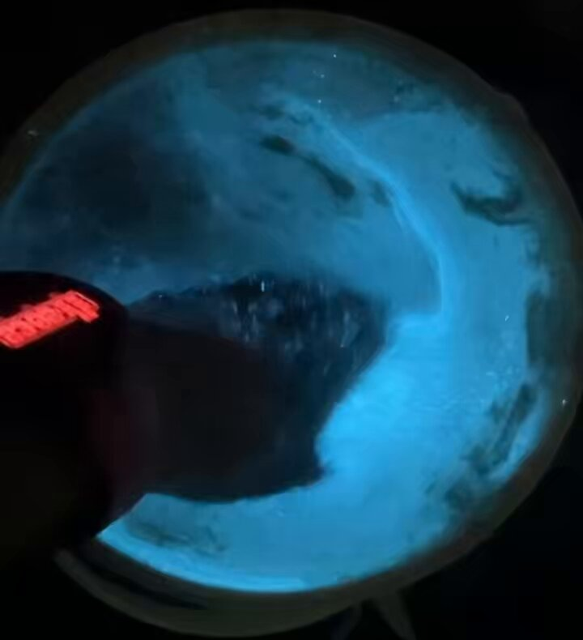
sgoｱﾛﾌｧ C調さんがリポスト
そうです 自販機もよく見るとTOICAマークになっているのがありますよ
エンドスさんがリポスト
TVアニメ「#天幕のジャードゥーガル」
メインビジュアル＆第2弾PV解禁！
OPテーマ｜SEKAI NO OWARI「Stella」
初回放送は7月4日(土)夜11時より
2話連続1時間スペシャル決定！
少女と妃。
復讐の絆で結ばれた二人が、地上最強の帝国に嵐を起こす――
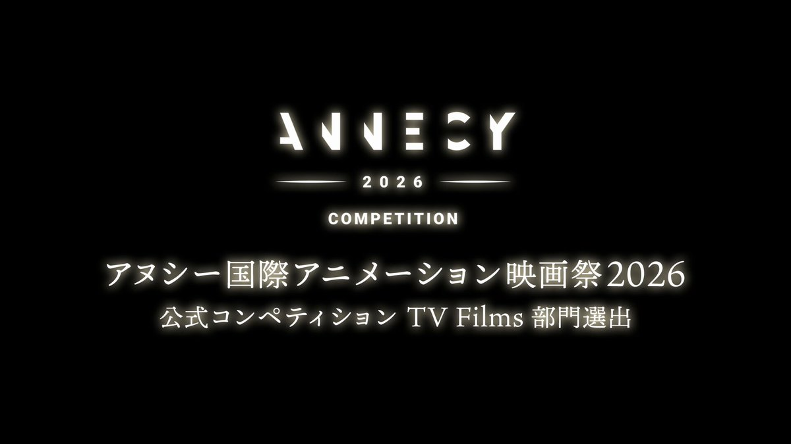
リジスさんがリポスト
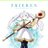
『葬送のフリーレン』とフェルメール展のコラボが決定！
詳細はこちら
http://
vermeer2026.exhibit.jp/collaborations/
フェルメール《真珠の耳飾りの少女》展
2026年8月21日（金）～9月27日（日）
#フリーレン #frieren
Torishima / INTPさんがリポスト
江ノ島見えなかったから、葉山行ったら夜光虫めっちゃ綺麗だった！
ゆうきゆうマンガ家の精神科医マンガで心療内科(50巻以上＆アニメ化)さんがリポスト
「しなきゃダメ」という思考の危険さ。
なるせひろのりさんがリポスト
文科省「はいこれが同志社国際の教育基本法14条違反を裏付ける5つの事実ね」 5ch「一個でも致命的で草 」
https://
crx7601.com/archives/63236
226.html
…
なるせひろのりさんがリポスト
007 First Lightのライティング作業はヤバい
これがGTA 6のナイトクラブに期待するディテールのレベルだ。
Torishima / INTPさんがリポスト
コスプレ撮影でご利用いただきました。碓氷峠鉄道文化むらではコスプレ撮影の受け入れも行っています。個人・企業問わず、ご利用日1週間前までに専用申込書での申し込みが必要となりますが、公式HPのお問い合わせフォームやお電話でお気軽にお問い合わせください。
nori
@nori_pockets
cosplay
ブルアカ/シュポガキ
ノゾミ@Ka12a5u
photo @akaaki_fu
※ロケ地撮影許可済
#ブルアカ #シュポガキ #BlueArchive
いるか@心が酒びたっているんださんがリポスト
当時価格60万のギター支払い終わった
これで私は戸山香澄になれる
しょうさんがリポスト
感謝。14年間ありがとうございました。最高の夢を観させて頂きました。
これから更に新日本プロレスを成長させるにはメディアとの一体化が不可欠と判断し、今回の決断に至りました。
引き続き応援よろしくお願いします。
#njpw #ブシロード
＞ω＜さんがリポスト
狂気に満ちた絵本を買ってしまった
#かんじるえ
とりしま (Sub I/O)さんがリポスト
バリバリにJR東日本の駅である新橋に、なぜかNewDaysではなくて首都圏絶滅種のKIOSKがポツンと。ずっと不思議だったんだけど、ふと気づいた。これってもしかして直上に東海道線新幹線が走っていて、JR東海の持分エリアだからですか？どなたか有識者
由羽@レモンアイコンの人さんがリポスト
本日 #ドラクエの日 に発表されたドラクエ企業コラボまとめ！
zoffメガネコラボ
本日予約開始
https://
zoff.co.jp/shop/contents/
dragonquest.aspx
…
貝印パフコラボ
本日販売開始
https://
store.kai-group.com/shop/e/edragon
q/
…
フェイラー グッズコラボ
本日抽選受付開始
https://
feiler.jp/shop/pages/lot
teryapplication.aspx
…
31アイスコラボ
6月1日販売開始
Torishima / INTPさんがリポスト
【お願い】「アラビックヤマト」は本来の用途でご使用ください
現在、SNS上で当社製品を使った動画が話題になっており、たくさんの方に注目していただけて大変嬉しく思っております。
ヤマト株式会社
@yamato_na_150
【お願い】「アラビックヤマト」は本来の用途でご使用ください
現在、SNS上で当社製品を使った動画が話題になっており、たくさんの方に注目していただけて大変嬉しく思っております。
とりしま (Sub I/O)さんがリポスト
個体識別番号が付いている牛肉を食べたので検索かけた
なんか辛くなった
うみゆき@AI研究さんがリポスト
エヌビディア、台湾に年1500億ドル投資へ ＡＩ革命「震源地」
http://
reut.rs/49o6L8v
エヌビディア、台湾に年1500億ドル投資へ ＡＩ革命「震源地」
貝さんさんさんがリポスト
あつい〜
エンドスさんがリポスト
国家情報会議設置法案が可決したが、政治的中立性を担保する文言もなければ文書もこれから議論というずさんの極み。こんな政権に内調、公安など日本のスパイたちが集結するのか。折しも目に余る思想統制、情報非開示、教育介入、自衛隊の私的利用、名称変更の軍隊化。なぜ、こんな法案を急ぐのか。
ろじぱら ワタナベさんがリポスト
異性の身長を聞いたら「じゃあキスしやすいね」って言うと良いですよ
俺はこれで3回逮捕されて2回死刑になった
とりしま (Sub I/O)さんがリポスト
いつだって大丈夫
しょうさんがリポスト
先日、昔の紙の図書券で本を買われたお客様がいらっしゃいました。
紙の図書券を扱ったのは、本当に久しぶりです。
聞けば、引き出しの奥に長くしまわれていたそうです。
昔の「紙の図書券」はこの先もずっと使えます。
家中探せば、きっと出てくると思いますよ。
花のき村でも使えます。
AVITAMINOSEさんがリポスト
業界誌の表紙が瑠璃の宝石になるとは夢にも思わなかった！
Torishima / INTPさんがリポスト
けっこうヤバかった

Bilawal Sidhu
@bilawalsidhu
Google Omni にスケッチしたカメラパスを与えて、ドローン視点の映像を生成するよう依頼しました。
Haruhiko Okumuraさんがリポスト
ポストで言及されている「坂井君のHalluCitation論文」とは、自然言語処理（NLP）分野の研究者である坂井優介氏（当時・奈良先端科学技術大学院大学）らの研究チームが2026年1月に発表した以下の論文のことです。
https://
arxiv.org/abs/2601.18724
Odashi
@odashi_t
坂井君のHalluCitation論文は界隈の研究者や学生数千人を抹殺するくらいの威力はありそう
輿水畏子さんがリポスト
#まのさば二次創作
貝さんさんさんがリポスト
#上伊那ぼたん
しょうさんがリポスト
『君の名は。』の小説版が映画公開前の時点で50万部超えてたの普通に未解決事件の類だと思ってるんだけど、誰か理由を教えて欲しい
この時点で文庫年間一位確定レベルという
新海作品PRスタッフ
@shinkai_works
50万部！ RT @KadokawaBunko:【#君の名は 。】映画がメガヒット中の「君の名は。」ですが、新海誠監督書き下ろしの原作小説『小説 君の名は。』もついに50万部を突破！ 映画をご覧になった方には、監督自身の紡いだ言葉を
Torishima / INTPさんがリポスト
東京都練馬区の放射第７号線も
エンドスさんがリポスト
プライバシー侵害にならないよう規定する案が否決って…どうかしてる。
国民の病歴や思想信条まで勝手に調べ上げ利用する権利を、国に無条件でくれてやれと。ありえない。
病気や障害が差別につながるからとカミングアウトせず治療している人だっている。
国が勝手に人の人生に土足で介入するな。
東京新聞デジタル
@tokyo_shimbun
国家情報会議法案、「プライバシー侵害」に歯止め設ける修正案が委員会で否決 政府案が参院本会議で成立へ
https://
tokyo-np.co.jp/article/490792/
とりしま (Sub I/O)さんがリポスト
Torishima / INTPさんがリポスト
ChatGPTってまだ植物百科通で壊せるんだ
Torishima / INTPさんがリポスト
【重要注意喚起】在日米海軍司令部の公式アカウントは不審者により乗っ取られましたが、現在アカウントを奪還、正常に戻すための対応中。不適切なプロファイル写真から司令部のロゴに戻すことは出来ましたが、制限を超えた？とやらで元のアカウント名
@CNFJ
にまだ戻せません。引き続きご注意を
貝さんさんさんがリポスト
#長崎そよ生誕祭2026
#長崎そよ誕生祭2026
Haruhiko Okumuraさんがリポスト
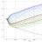
LLM-jpコーパスの日本語データのソースの一つであるPDF資料の生データを公開しました。5000万件あり、日本語関係のPDFのコレクションとしては巨大だと思います。
https://
llmc.nii.ac.jp/topics/post-27
51/
…
Torishima / INTPさんがリポスト
土地を数秒でスキャンし最も効率的な駐車場配置を計算してくれるAIが素敵
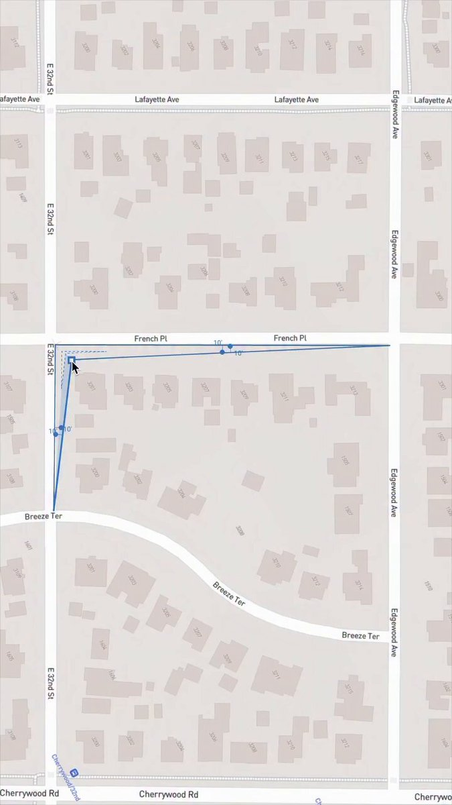
Torishima / INTPさんがリポスト
【お願い】「アラビックヤマト」は本来の用途でご使用ください
現在、SNS上で当社製品を使った動画が話題になっており、たくさんの方に注目していただけて大変嬉しく思っております。
エンドスさんがリポスト
今朝（27日）朝日「天声人語」が「高市陣営の中傷動画」を取り上げて「不思議で、仕方がない。なぜ高市首相は正面から向き合おうとしないのだろうか。（略）他候補を中傷する動画をSNSに投稿したとする疑惑に対し、はぐらかすような姿勢が目立つ」と珍しく正論を高市氏にぶつけている。覚醒した？
Torishima / INTPさんがリポスト
1枚目の場所、見覚えあるような……と調べたけど別の場所だったのに結局闇がありそうで笑えない。千葉の道路どうなっとんねん！
mgnt（マゼンタ）
@ndmk_mgnt_bot
「車で絶対近づいちゃいけないエリア」からぎりぎり外側のように示されてるエリアでもこういう事例がいっぱいあるのが千葉県北西部
エンドスさんがリポスト
衝撃的な答弁ですね
高市政権、何でもありだな…
保団連（全国保険医団体連合会）
@hodanren
小西議員
「大臣の裁量で診察、検査、処置などを保険除外できる法案の立法事実(必要性)と立法目的は？」
保険局長
「現在、具体的に考えているものはない」
小西議員
「16年間、国会議員やっているが、立法目的と立法事実を説明できない法案に遭遇したのは初めてだ」
5月26日参議院厚労委員会
エンドスさんがリポスト
昨日訃報の出たソニー・ロリンズ。
「TVを見るな。本を読め」
Synekura Audio
@synekura_audio
ソニー・ロリンズ - 読書をせよ、テレビは見るな
Torishima / INTPさんがリポスト
こちらでした。
大内哲也 Tetsuya Ouchi
@TetsuyaOuchi
ここですかね？
Torishima / INTPさんがリポスト
エッジケース＝例外的なシナリオや想定外の状況。名前をが変わったり、嫌がらせにあったり、亡くなったりした時ログインや共有やデータ保持はどうあるべきか。
心（とプロダクト）を傷つけるエッジケース
https://
u-site.jp/alertbox/edge-
cases
…
@UsabilityJp
より
心（とプロダクト）を傷つけるエッジケース
Torishima / INTPさんがリポスト
普段は隠れてしまう屋根の折り込み部分にある「カラーパッチ」に気づいていただき、さらに「ブランドカラーへのこだわり」まで読み取っていただけたことは、紙パックメーカーとしてこれ以上ない喜びです
発見していただきありがとうございます
（日本製紙紙パック営業本部
しなもん
@Cinna2073
あーCMYKGねCMYKG…
CMYKG
ブランドカラーに専用インク割り当て
Torishima / INTPさんがリポスト
世の中には嫌なのに我慢して辞められ無い人が多いけど、自分には我慢の機能が無いのですぐ辞めます。
MICHEE-N（ミッチー・Ｎ）さんがリポスト
今日から某洋上小学校。8泊9日。
9日間、700人以上島に行けるところ、250人しか行けず、満席も多く急な出島はできず、貨物は週2で運休。
上京した島民は夜船で5,000円以下で寝て帰れる所、東京で余計な1泊とジェット船で島嶼が取れたとしても1万円余計にかかるし、島に帰るのも遅くなる。
とりしま (Sub I/O)さんがリポスト
Google Omni にスケッチしたカメラパスを与えて、ドローン視点の映像を生成するよう依頼しました。
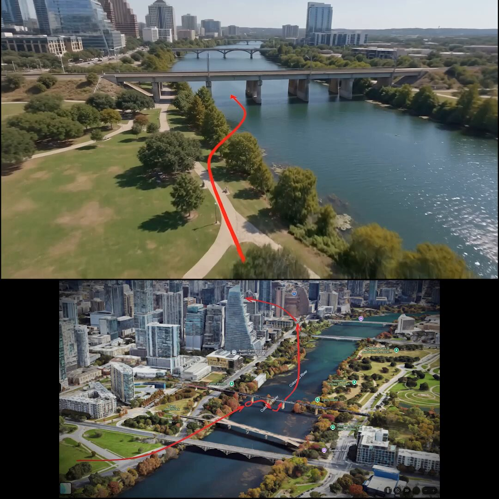
AVITAMINOSEさんがリポスト
先日ANAの飛行機内で提供される機内Wifiに繋いだら、懐かしい画面が出てきた。
CentOSだったとは…。
そういえば、時々Squidのエラーも見るな。
インターネットキャッシュがSquidで、機内WebサイトはApacheで、すべてCentOSで動作してるということなのかな..。
#ANA #機内Wifi
由羽@レモンアイコンの人さんがリポスト
5日間限定の無料券チャレンジ(^^)
今日は冷凍焼餃子無料の1日目です♪
1）このアカウントをフォロー
2）この投稿をリポスト
3）抽選で毎日1万名様に無料券！結果は自動でお知らせ
キャンペーン詳細はこちら♪
Torishima / INTPさんがリポスト
こちらが船上から見た夜光虫
エンドスさんがリポスト
高市政権下で改憲に絡む記事が増えているが、読むたびに作家の井上ひさしさんの言葉が頭に浮かぶ。「憲法は戦争で亡くなった人たちが命を懸けて勝ち取った言葉」「戦争で亡くなった人は語れないが、代わりに語っているのが憲法だ」
とりしま (Sub I/O)さんがリポスト
言語モデルには「睡眠」が必要です
DAIR.AI
@dair_ai
// 言語モデルには睡眠が必要だ //
エージェントに「睡眠」を取らせておけ、皆さん。
真面目な話、これは長期的エージェントから最大限を引き出すという魅力的な論文です。
Haruhiko Okumuraさんがリポスト
開発者の皆さん、すべてを止めて読んでください。さっき自分のマシンでマルウェアをほぼ実行するところでした。この詐欺の手口を正確に知ってほしいんです。
GitHub
とりしま (Sub I/O)さんがリポスト
// 言語モデルには睡眠が必要だ //
エージェントに「睡眠」を取らせておけ、皆さん。
真面目な話、これは長期的エージェントから最大限を引き出すという魅力的な論文です。
Torishima / INTPさんがリポスト
夜光虫を見た
Torishima / INTPさんがリポスト
「車で絶対近づいちゃいけないエリア」からぎりぎり外側のように示されてるエリアでもこういう事例がいっぱいあるのが千葉県北西部
Torishima / INTPさんがリポスト
VSCodeの右上隅がIQテストみたいになってきてる
Wordle 1,803 4/6
MICHEE-N（ミッチー・Ｎ）さんがリポスト
沖縄の暮らしDAY1146(26.5.27)
行先不明
Torishima / INTPさんがリポスト
稲毛海浜公園野外音楽堂の利用料金って、これ本当にこの料金でいいんですか？
野外でDJしてぇ！とか言ってうっかり借りてしまうかもしれませんよ？
とりしま (Sub I/O)さんがリポスト
いろかぐ幸せになって...
Torishima / INTPさんがリポスト
湘南に現れた夜光虫。初めてみたけど美しかった。
ふぇむ(せかんど！)さんがリポスト
Torishima / INTPさんがリポスト
夜光虫を見に江ノ島。
花火大会並みに人おる（笑）
みんなで夜の海をぼーっと見るの楽しすぎた
Torishima / INTPさんがリポスト
「人口が1億人を超える島」は世界に2つしかありません(2023年時点)。1つは本州、もう1つはジャワ島。
この2つの島で話される言語が、それぞれ Japanese と Javanese ですね。
さいなー@浜松土曜夜, 幕張千秋楽
@Cyxxr1UI8
そういえばJapaneseに似てる言語でJavaneseっていうのがあるらしい
何語やねん
しょうさんがリポスト
GoHandsを買収したU-NEXTが実は密かにアニメに力を入れていた件｜しょう #アニメ感想文
https://
note.com/note_sho/n/nef
4d8aef915d
…
U-NEXTのGoHands買収について簡単にnoteにまとめました。
GoHandsの直近2作品にU-NEXTの社長が企画としてクレジットされてた話などなど
GoHandsを買収したU-NEXTが実は密かにアニメに力を入れていた件｜しょう
いるか@心が酒びたっているんださんがリポスト
後半間違っててもメンバーでニコニコしてるの微笑ましいですᵕ̈*
Lies and Truth
#LArcenCiel
Torishima / INTPさんがリポスト
星空の下、夜光虫に群がる人々
鵠沼海岸では海の家の基礎も建ち、
夏の支度が着実に進んでいます。
Torishima / INTPさんがリポスト
肉眼だとここまで鮮明には見えない
加工だ
と言うご指摘がありますが、見えます！
見えますし、肉眼で見た方が綺麗です！
そして加工してません
ふわりと光る瞬間(手前)がほとんどですが時々ギラッと光る瞬間(左奥)があるんです♪波の端っこがチラチラッと輝いた直後がシャッターチャンス#夜光虫
江ノ島さんぽちゃん@5/23•24両日デザフェス63 西4階 L-58～60
@enoshimasanpo
お近くの方ぜひ...
#鵠沼海岸 #夜光虫
行ってみたいけど、平日なのよね…
レトロゲーム大百科
@DLsite537
TVアニメ #花織さんは転生しても喧嘩がしたい第1話先行上映会＆キャストトークショー開催決定!
6月5日(金)
AKIHABARAゲーマーズ本店 6F イベントスペース
出演: #関根明良 #星希成奏 #上田瞳
詳細:
https://
gamers.co.jp/contents/event
_fair/detail.php?id=7539
…
#アニメ花織さん
Torishima / INTPさんがリポスト
拡散協力ありがとうございます。
海の状況は戻り、 #夜行虫 はご覧いただけません。
必要以上のご訪問はお控えくださいますよう、お願いいたします
お写真をご投稿いただく皆様は、素敵な思い出のお写真と共に、『もう見れないよ』、という点も一緒にご投稿くださいますと幸いです。
#蒲郡
Torishima / INTPさんがリポスト
このところ各地で話題になっているほどの量ではないと思いますが、
当館前の片瀬海岸西浜で5月25日(月)現在、夜光虫が観察できます
Torishima / INTPさんがリポスト
赤潮の海。波打ち際に光る夜光虫で、まるで海が燃えているよう。
Torishima / INTPさんがリポスト
ははーん、なるほど。“つまりGUIをAIに直接操作させるのではなく、GUIの背後にある意味状態をテキスト化し、AIはその意味状態を更新する。更新された記法をパーサーで読み込み、アプリケーション側が再描画する。”
【Skill配布あり】中間記法パターン(MNP)について：どんなツールでも簡単&爆速&安定にAI化する内部実装方法｜なつ (生活者/デザイナー/リサーチャー)
Torishima / INTPさんがリポスト
ですです。現在は人間への可読性とAIへの可読性を同時に担保していますが、人間への可読性を下げるともっと高速化されるかもしれません。
最近Toonというのを知りましたがこのあたり使えるかも⋯
JSONはもう古い？LLM時代の新フォーマット「TOON」がトークンを節約する理由
https://
zenn.dev/akari1106/arti
cles/ba99c8702ee732
…
多動パンダ
@panda_tado
これめちゃくちゃいい話だ。要はデータスキーマをLLMが効率よくいじれるように圧縮記法を作っちゃおうぜという話で、DifyはYAMLで、n8nはJSONでやってるのを圧縮記法にすることでかなり小気味よく軽量に動作するようにできる。私もサービスデザイン畑出身で技術詳しくないので勉強になりました！ x.com/Dia_Nexus/stat…
うみゆき@AI研究さんがリポスト
自分でガン詰め方が怖くなってて自分が怖い
Torishima / INTPさんがリポスト
これめちゃくちゃいい話だ。要はデータスキーマをLLMが効率よくいじれるように圧縮記法を作っちゃおうぜという話で、DifyはYAMLで、n8nはJSONでやってるのを圧縮記法にすることでかなり小気味よく軽量に動作するようにできる。私もサービスデザイン畑出身で技術詳しくないので勉強になりました！
なつ
@Dia_Nexus
【Skill配布あり】中間記法パターン(MNP)について：どんなツールでも簡単&爆速&安定にAI化する内部実装方法｜なつ (生活者/デザイナー/リサーチャー) @Dia_Nexus #AIとやってみた
https://
note.com/art_reflection
/n/nccfe6cc57073?sub_rt=share_pb
…
先日発見した業界でも新たなツールのAI化アプローチを公開します。みんなもAIツールを作ろう！
Torishima / INTPさんがリポスト
【Skill配布あり】中間記法パターン(MNP)について：どんなツールでも簡単&爆速&安定にAI化する内部実装方法｜なつ (生活者/デザイナー/リサーチャー)
@Dia_Nexus
#AIとやってみた
https://
note.com/art_reflection
/n/nccfe6cc57073?sub_rt=share_pb
…
先日発見した業界でも新たなツールのAI化アプローチを公開します。みんなもAIツールを作ろう！
【Skill配布あり】中間記法パターン(MNP)について：どんなツールでも簡単&爆速&安定にAI化する内部実装方法｜なつ (生活者/デザイナー/リサーチャー)
しょうさんがリポスト
個人的に取っていた録音を今更聴いたのですが、初出情報など一次資料として大変興味深く、現在聴く手段がないのが惜しいと感じ、音声に忠実に書き起こしてみました
「檜山沙耶のアニウラ」超かぐや姫！特集回（山下清悟監督・桃原一真P出演）のインタビュー全編書き起こし
「檜山沙耶のアニウラ」超かぐや姫！特集回（山下清悟監督・桃原一真P出演）のインタビュー全編書き起こし｜とりしま日記
Torishima / INTPさんがリポスト
【沼津、夜光虫の一幕】
沼津の写真にて初の万バズ。反応を下さった皆様に多大なる感謝を。
静岡県沼津市、景色も飯も本当に最高なので是非足を運んでいただければ……！
沼津、Aqoursを愛しております。
後藤星人Photo
@PhotoGT_numazu
沼津に行ったら岩が青く発光してた。
すっごい！！
#夜光虫
#沼津
Torishima / INTPさんがリポスト
沼津に行ったら岩が青く発光してた。
すっごい！！
#夜光虫
#沼津
Torishima / INTPさんがリポスト
夜光虫の海を泳ぐアザラシが流れ星みたいで綺麗だった。
ポン☆潤々さんがリポスト
アニメ・キャラグッズ買取販売専門店
「トレファクアニメラボ」
立川フロム中武1Fについにオープン！
6/19(金)のオープンに向けて、
店舗で使える【限定クーポン】を
LINEでプレゼント！
「もちみこ」さん作の公式キャラ
みっけちゃんと共に
ご来店をお待ちしています！
友だち追加はこちら
Torishima / INTPさんがリポスト
パッケージ描かせていただきました！ブックレットで永江さんと対談させていただいたり、他にも気になる特典満載です！何卒何卒
『超かぐや姫！』公式
@Cho_KaguyaHime
─── ✩₊⁺⋆⋆⁺₊✧ ───
『超かぐや姫！』Blu-ray
9月9日(水) 発売決定
────────────
通常版／特装限定版の2種が
本日より各店舗にて予約受付開始
ジャケットイラスト
へちま描き下ろし
特装限定版は、
✧「Reply(かぐや＆彩葉 ver.)」
Haruhiko Okumuraさんがリポスト
Kanaryリリースしました
Macのキーボード操作を最強にするアプリ
1. ウィンドウの移動やリサイズが簡単に（どこでも掴んでドラッグ可能）
2. アプリの起動・非表示をワンタッチでトグル可能
3. 英語キーボードでも英数・かな入力をワンタッチで切替（現在の状態を確認する必要なし）
Wordle 1,762 5/6
Torishima / INTPさんがリポスト
メタがSAM3.1をリリース。SAMなんてどんだけアプデしてもらってもいいですからね。SAM3.1では一発で複数オブジェクトをトラッキングできるように進化した
AI at Meta
@AIatMeta
SAM 3.1 をリリースします：SAM 3 へのドロップイン更新で、オブジェクト多重化を導入し、精度を犠牲にすることなくビデオ処理の効率を大幅に向上させます。
この更新をコミュニティと共有し、小型でアクセスしやすいハードウェアでも高性能アプリケーションの実現を支援します。
https://
go.meta.me/8dd321
Torishima / INTPさんがリポスト
AfterEffectsがAviutlより優位に立ってた機能の一つだったロトブラシ、ほぼ代替がでたと言って良さそう
現状のAviutl2を踏まえると、道具は全て無料でかなりのクオリティな動画を作れる時代になってきてるなぁって感じだ

にす
@nisusansu
SAM3の申請が通ったから試してみた
初期状態だと5070Tiに対応してなかったからPyTorchをごにょごにょする必要はあったけど、めっちゃすごいかも x.com/clean123525/st…
Torishima / INTPさんがリポスト
#AviUtl2
1クリックで動画切り抜き出来るプラグイン
https://
nicovideo.jp/watch/sm459319
05
…
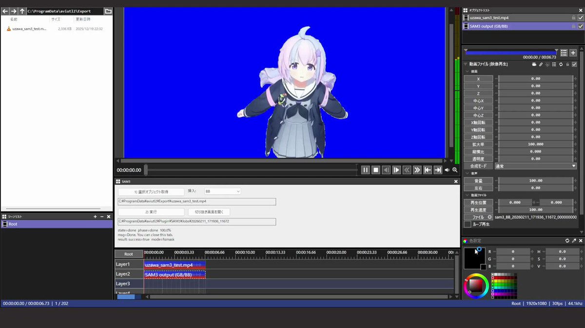
なるせひろのりさんがリポスト
#これでフォロワーさんが増えました
いるか@心が酒びたっているんださんがリポスト
今まで色んな炎上を経験してきたけど
ビアンカじゃなくてフローラ派って言った時が一番燃えた